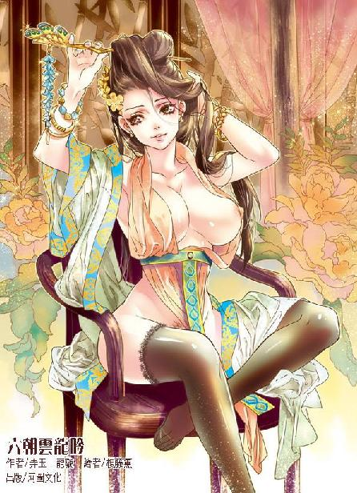

第52集·母子离心
汉国篇（4/28）
出版日期：2014-04-24
【本集内容简介】
颍阳侯假借寻人以行灭口之实，动机为何？襄邑侯也正好买凶杀人，还是委托斯明信下手！权倾汉国的外戚吕氏是为天子掩藏行迹，或是有其他目的？
小紫的最得力侍奴已来到汉国，使程宗扬新添助力。在追查凶案线索时，程宗扬遇到一名柔美中带着端庄的少女，名字之响亮让程宗扬惊讶，她叫合德！三名能引动风云的女子同时立足于汉国宫廷，其中秘事究竟何等惊人？
※ ※ ※ ※ ※

封面人物：卓云君
洛都金市位于城西，南接雍门，北临上西门，面积超过二百亩。市内一条二十丈宽的大街纵贯南北，连接两端的坊门，规模比城中的主路也不遑多让。大街两旁分出三条横街，将整个金市划分为八个区域。里面店铺林立，充斥着来自异域的奇珍异宝。
乐行的胡商白白胖胖，唇上留着两撇漂亮的小胡子，笑容可掬。他飞快地用大拇指抹了抹胡须，一边道：“胡琴？当然是我这里最好！客官请看，敝行胡琴有三弦的，两弦的，还有马头的……”
对面的商人态度傲慢地说道：“不光要琴，乐工有吗？”
“有！洛都能歌善舞的胡姬，全都是在小店买的琴、学的曲。客官问问周围的人就知道，昨天好几位公卿派人来召敝行的乐师过去演奏，敝行因此还歇业一天。敝行的胡乐姬更是名震洛都！可谓是歌如裂帛，舞如天魔……”
商人摇了摇手，“不要年轻的。太不安分。”
胡商竖起大拇指，“行家！”
那商人道：“在洛都待得太久也不成。本店在舞都，习惯了洛都的繁华，只怕看不上我们那穷乡僻壤。”
“舞都哪里是穷乡僻壤？”胡商道：“我听说舞都七里坊有个游春台，里面的歌舞堪称绝妙！”
程宗扬道：“是游冶台。而且游冶台里面没什么歌舞，就是些奇装异服。”
胡商有意试探，闻言哈哈一笑，说道：“看来是我记错了。听客人的意思，是要上了年纪，刚到洛都的老乐工是吗？”
“唔。”商人派头十足地点了点头。
胡商双掌一合，“真是巧！前日刚有个老乐工来洛都，他是草原上最有名的吟游诗人，无论是伟大的单于、勇猛的可汗，还是星星一样多的贵族，都争着请他去自己的营帐。”
那胡商说得天花乱坠，但卢景深知这些胡商的伎俩，十句里面有一句真的就已经够多了。他不以然地说道：“在哪里？我去见见他。”
“就在南边的小客栈里。”胡商笑眯眯道：“不过话说在前面，他是敝店花重金聘来的乐师，转聘的话，薪资敝店要抽六成。”
“先见过再说。”商人道：“若不合用，一文钱都没有。”
胡商拍着胸膛道：“客官尽管放一万个心！”
小客栈店如其名，整个客栈夹在两幢楼之间，门面只有五六尺宽，伸开手臂都能摸到两边的墙壁，比起长兴脚店也强不了多少。
两人沿着吱呀作响的楼梯爬上楼，找到胡商说的位置，程宗扬抬手敲门，谁知房门一碰就开，里面连门闩都没有。
一个须发皆白的老人坐在一块破旧的毡毯上，抱着一架摔坏的胡琴，勉强地摸索着。
程宗扬一眼看去，心下就凉了半截。那老汉身材不高，满是皱纹的脸上一片蜡黄，显得十分虚弱。更要命的是，他的一双眼睛眯在一起，微露的眼缝中半点光采皆无，居然是个瞎子。
听到声音，老人扭过头，等他一开口，程宗扬心里彻底凉了，那老人的口音竟然比兽蛮人的口音还古怪，根本分不出是什么语言。一个瞎子，差不多还算个哑巴，根本无法沟通，自己找人的路也太坎坷了吧？
卢景忽然开口说了几句，语调与他有七八相似，勉强能听出来和六朝的语言相近，不过他的问话和老人的回答，自己一个字都没听懂。
两人一问一答，交谈了一盏茶时间。最后卢景直起腰，从袖中拿出几枚钱铢放在他的毡毯上。
离开小店，程宗扬道：“是他吗？”
卢景摇了摇头，“他的话我只能听懂一两成。大概是说他从一个叫魁朔的部族来，途中与同行的人失散了，刚到洛都没几天。”
“还有呢？”
“没了。我问的他都听不懂。”
“那怎么办？找个通译？对了！”程宗扬反应过来，“那个胡商——他肯定能听懂！”
“不能去找外人。”卢景道：“虽然不知道初九那天发生了什么事，但肯定关系重大，找胡商只怕横生枝节。”
已经出了二十条人命，再怎么谨慎也不为过。程宗扬也不愿意看到再有无辜的人被卷进来。但胡琴老人目不能视、语不能辨，难道线索到此又要中断？
“等老四回来。”卢景道：“他以前孤身一人在草原上闯荡过两年，也许能听懂他的话。”
程宗扬一颗心落回肚子里，斯明信一旦回来，两骏齐出，整个洛都也没有多少人能挡住他们。
“还有一个疤面少年，可惜除了脸上有疤以外，其他线索一点都没有。”程宗扬叹道：“好像又走进死胡同了。”
“还有一条线索我们没有找。”卢景道：“管理上汤的捕盗掾。”
※ ※ ※ ※ ※
“长兴脚店失火的事？”
田球心里一紧。这件案子看似很普通，一家脚店失火，烧死了店主一家。秋冬之季天干物燥，失火之事常有，而且火灾并没有波及其他房舍，财物损失也不多，因此早在数日前就已经结案。
但田球清楚，那桩失火案与文牍上的根本是两码事。死于火灾的一共五人，均被人用利刃断喉，然后纵火焚尸，店主一家阖门被灭，没有一个活口。
田球还记得自己当时把调查的情况写在简牍上，递交给县尉，县尉对此十分重视，当即命他细查此案，追拿凶手。但仅仅一个时辰之后，县尉又把他召去，当面递给他几支重新填写过的简牍，命他在上面刻名留印。
简牍上的墨痕很新，内容与自己的调查很相似，但去掉了所有凶杀的痕迹，改为一桩普通的失火案。
田球当了多年差吏，一言不发地刻上名字，将随身携带的铜印蘸上朱砂，盖在名字上方，然后恭恭敬敬地递给县尉。
他知道自己的选择十分明智，因为就在昨夜，洛都令吕放暴病身亡，接替他的人选，正是如今的县尉。
田球定了定神，不经意地瞟了眼来客。那人虽然身着布衣，但头发上的压痕尚在，很明显是武将常戴的弁冠。他虎口厚硬的粗茧，只有常年握刀的手才会出现。更重要的是他随身佩戴的长刀，虽然刀柄用布裹住，但柄尾突起的痕迹分明是一柄环首刀——汉国军方的制式武器。还有他的眼神和身形……只有军人才会有如此刚毅的目光和挺拔的身姿。
“长兴脚店失火的事嘛……”田球拉长声音道：“已经结案了。”
那名军人不动声色，“确定是失火？”
“当然。”田球一口咬定，“简牍上就是这么写的。”
“是否有目击者？”
“火灾发生在半夜，又隔着林子，等有人看到，房子都已经烧穿了。”
“当时住在店里的客人呢？”
“失火是在八月十一的夜间。据镇上人说，脚店十日就已经关门歇业，店中并没有客人。火场也没有其他尸首。”
“在此之前呢？”
“最晚是初九，有人去过店里，是附近一个猎户，叫张余。我查问过，他只是去店里卖猎物，与火灾没什么关系。”
军人站起身，收起案上的羽林天军腰牌，转身离开。
田球松了口气，暗暗祈祷这案子赶紧过去。至于当天发生了什么事，他一点都不想知道。
※ ※ ※ ※ ※
“打猎的后生……”
一名须鬓斑白的老者在路边遥遥招手。
张余走过去，拍了拍肩上的猎叉，“老丈，要兔子吗？刚打的几只！那只白兔是我下套子逮的，拿回去就是不吃，也能当个玩物。”
老者看了一会儿，满意地说道：“这几只我都要了，价钱多少？”
张余一高兴，说话声音也大了起来，“一共五只兔子，有大有小，老丈也知道，到了市上，大的要三四十，小的也要二三十个铜铢，老丈要的话，给一百二十个铜铢就好。”
老者絮絮叨叨说了几句，砍了五个铜铢的价，然后带着张余到家里取钱。张余顺利卖掉猎物，心情正好，一路和老者闲谈。
路过火场时，老者叹道：“长兴脚店也烧了。店里的孙老头比我还小两岁，没想到走到我前头了。”
张余也叹道：“可不是嘛。失火前两天，我还去店里卖过兔子呢。”
“咦？那两天不是歇业了吗？”
“没有。我去那天店还开着。”
“那是初十……初九……”老者仰脸数着日子，“是初九吧？”
“是初九。”
“想起来了，”老者叹了口气，“那天我也去过店里。孙老头忙前忙后的，我还记得店里住了一个大汉，说是拳师？”
“对！那拳师姓杜，说是要成亲，满脸喜气。看见我带的兔子，还过来问价钱，他少了一只眼睛，我记得可清了。”
老者道：“一个拳师也住通铺，那么些人怎么挤得下啊……”
张余道：“镇上的客栈都住满了，不住脚店还能住哪儿？别说拳师了，我看到有个书生也在通铺挤着。”
“老喽老喽，记不清了。那书生是不是个疤脸的？”
“疤脸的少年住在上房，还带了个老仆。”
老者感叹道：“一老一小的，出门在外不容易啊。”
“老丈是善心人。”张余说着摇了摇头，“有些人啊，丧尽天良。”
老者道：“小哥何出此言？”
“那天我一进脚店，就看见赛卢了。”
“赛卢是哪个？”
张余道：“不瞒老丈说，赛卢跟我是一个村子的。那小子从小不干正事，整天跟那些游民鬼混，还当了扒手。那天在通铺挤着，一双眼睛瞄来瞄去，多半是看中了谁的钱财。”
老者嗟叹道：“出门在外，遇见扒手可要当心。那天在通铺的，还有……”
张余想了一会儿，“还有个文士。”
老者恍然道：“对，上了年纪那个。”
张余笑道：“老丈又记错了。那人三四十岁的年纪，随身带的纸笔。”
※ ※ ※ ※ ※
张余拿了钱，高高兴兴走远。
程宗扬道：“严君平十几年前就是书院的山长，现在起码也有五十多岁。听起来那个文士并不是他。”
“天上掉馅饼的事还是不想了。”卢景道：“加上老仆、文士和赛卢，现在我们知道那天脚店里都有谁了——两间上房，一间住的陈凤和延玉，一间是疤面少年和老仆。通铺八个人，分别是郁奉文、杜怀、三名脚夫、胡琴老人、不知名的文士，还有那个赛卢。”
“找赛卢！”程宗扬发了狠，“连名姓都有了，我就不信找不到他！”
“你们是什么人？”外面有人喝问道。
程宗扬这才意识到自己还站在别人院子里，赶紧赔笑道：“我们是过路的，走得累了，在这里避避日头。”
那汉子神情不善地瞪了他一眼，然后放下水桶，舀了瓢水，递给须发斑白的卢景，粗声道：“喝吧！”
卢景黏着胡子，喝水只怕露馅，推给程宗扬道：“侄儿，你先喝。”
程宗扬推让不得，只好喝了几口。
那汉子不乐意了，斥道：“不知礼数的小子！长者未饮，你一个侄辈哪里能先饮？”
程宗扬肚里苦笑，汉国百姓大有古风，行事磊落，恩怨分明，而且很是古道热肠，看到两个陌生人在自家院子里待着，不满之余，还是取水给老者喝。只不过自己挨的这通教训未免太冤了。
“大哥教训的是，只是长者赐，不敢辞。况且我家叔公上了年纪，喝不得凉水。”
“等着！”那汉子推开厨房的柴门，去灶下烧水。
程宗扬与卢景对视一眼，赶紧落荒而逃。
※ ※ ※ ※ ※
“查出来了。”郑宾道：“那只鸽子飞去的地方是北邙山一处苑林，属于颍阳侯吕不疑的私产。”
“果然是他！”程宗扬抚掌道：“这位仁善好学、礼贤下士的侯爷，背地里真够狠的！”
卢景道：“安世呢？”
“他和老敖、刘诏一起去了下汤，先把坐地虎引开，然后我才放的鸽子。”
“好。”卢景冷冰冰道：“让我们等着瞧瞧，动手杀人的究竟是谁？”
从遇害者的情形分析，行凶者中并没有太强的高手，因此他们先在下汤设好圈套，等着闻风而来的杀手主动往里面跳。以蒋安世、敖润和刘诏的身手，寻常好手来十几个也不在话下，何况对付一个地痞，颍阳侯未必会派多少人来。
乐津里的寓所已经被人盯上，众人会面都放在鹏翼社。此时蒋安世等人出去给杀手下套，其他人也没闲着，高智商带了几名打扮成随从的禁军士卒去打探门路，办理首阳山开矿的正事；冯源去找合适的宅所，准备盘下来当作落脚点；富安则暗中去了宋国设在洛都的官邸拜访，看能不能搭上关系；哈迷蚩和青面兽相貌骇人，出门太过扎眼，此时留在社内，把兵刃一件件磨得雪亮，万一出了岔子被人盯上，也好厮杀。
程宗扬问道：“惊奴，你打听的事呢？”
惊理被派出去查问颍阳侯的动向，打听初九那日究竟发生了什么事，此时已经回来，闻言答道：“奴婢已经打听过。初九当日，颍阳侯一直在北邙山，并没有去过上汤。”
程宗扬大为意外，脱口道：“怎么可能？”
迄今为止，所有的线索都指向颍阳侯吕不疑，可惊理调查的结果完全出乎意料，吕不疑既然在北邙山，那么初九在上汤的又是谁？
“据说是太乙真宗一位教御来访，洛都喜好黄老之术的公卿之家都去拜会问道。从初七到初九，颍阳侯的车驾都在北邙山，从未离开。”
“哪位教御？”
惊理露出一丝暧昧的笑意，她装作抹唇，用丝帕掩饰了一下，然后不动声色地吐出一个字：“卓。”
程宗扬目瞪口呆，半晌才道：“干！”
惊理若无其事地说道：“一直到初十，颍阳侯才离开北邙山，前往北宫拜见太后，午后便又返回苑中。一个月来，颍阳侯的车驾从未到过上汤一带。”惊理停顿了一下，然后道：“还要奴婢再查吗？”
程宗扬吸了口气，“不用了，我直接去问她。”
真是横生波澜，卓云君远赴龙池，一连数月都没有消息，没想到在这关口竟然来到洛都，而且还和此事最大的嫌疑人吕不疑扯上关系。
想起卓美人儿，程宗扬心头不由一片火热，“她在什么地方？”
“北邙山，上清观。”
程宗扬当即对卢景道：“五哥，我出去一趟。”
“太乙真宗的教御？姓卓的？”
初九当天颍阳侯吕不疑究竟在什么地方，找到卓云君一问便知，根本不用再费心去打探，但这话程宗扬不好直说，只含糊道：“我和她打过交道，说不定能问出些什么。”
卢景翻着白眼琢磨了一会儿，“太乙真宗的教御非是浪得虚名之辈。你一个人不大好对付。等老四回来，一起出手才稳妥。”
卓云君身份特殊，除了死丫头的几个奴婢，并没有多少人知道内情。有太乙真宗教御的名头在，难怪卢景如此慎重，但他如果知道真相，白眼估计能翻到后脑勺去。
程宗扬干咳两声，凛然说道：“不必劳烦两位哥哥！太乙真宗的教御，别人怕，我却不怕！几句话的事，我自己去就行！”
惊理知道内幕，听主人说得大气凛然，只扭头掩住唇角。
卢景并非啰嗦之人，程宗扬既然说得有把握，也不多加劝阻，点头道：“我去找赛卢。”
※ ※ ※ ※ ※
马车辘辘驶过长街，透过车帘，能看到右侧气势恢弘的宫城。那些雄伟的望楼和阙楼远在伊阙都能看到，此时从旁边驰过，巨大的飞檐斗角仿佛从头顶凌压下来，带来强烈的压迫感。
罂粟女像猫咪一样，柔顺地伏在主人膝上，娇躯罗衣半褪，露出一侧雪白的香肩。汉国公卿的车驾因是官用，多为单辕双轮的轻便马车，四面敞露，只在车顶加上伞盖，以示无私。私人马车种类则琳琅满目，最常见的是双辕四轮的油壁车，还有一些以帷幔、薄纱为壁的软质车厢。而晋国常见的玻璃车窗，在汉国几乎绝迹。倒不是汉国道路比晋国差，而是汉国车马速度要快得多。晋国那些涂脂敷粉、出入都要婢女搀扶的贵族，连乘牛车都嫌太快，汉国却是马如龙人如虎，一路绝尘，如果用玻璃作车窗，一路不知道要换几块。
程宗扬乘坐的是一辆街头巷尾随处可见的油壁车，外观毫无特色，保证扔到路上就认不出来，车内却是茵席、锦垫、竹枕一应俱全。他以一个舒服的姿势斜倚在枕上，一手伸进侍奴衣间，揉捏着罂奴丰腻的乳肉，一边看着她脸上渐渐浮现的红晕。
在禁制纹身的影响下，只要自己需要，罂奴就是一个随时都会发情的荡妇。虽然在理论上，任何一个侍奴都必须随时满足自己的欲望，但像罂奴这样，仅仅嗅到自己的气味，淫欲就不受控制地泛滥，整具肉体听任摆布的淫态，只有处于瞑寂术中的凝奴可以相比，而且她还是清醒的。
车内忽然一亮，马车终于驰出宫阙的阴影。程宗扬抬起眼，远处一条建在半空的复道，像彩虹一样悬在两宫之间。整条复道由桥拱、回廊和飞檐构成，镶嵌着大块的云母和玉石，在阳光下金碧辉煌。复道下方是宽阔的街道和大片的苑林。
驰过天子居住的南宫，前方是规模更加宏伟的北宫。宫内林立的楼观高耸入云，顶部有些装饰着奇异的飞鸟，有些装饰着威武的神兽，在碧蓝的天空下金光闪耀，充满了神话中才有的气息。
汉国最尊贵的皇太后就居住在这座宫殿中，她曾经是这个帝国的掌控者，也是整个吕氏家族力量的来源。
“吕雉……”程宗扬念着汉国皇太后的名讳，喃喃道：“这是一个很可怕的名字啊……”
※ ※ ※ ※ ※
一片阴云从天际涌来，阳光变得黯淡。秋风卷起枝梢飘零的落叶，从汉白玉砌成的雄伟阙楼间穿过，越过林立着虎贲甲士的城楼，飞入巍峨而森严的宫禁。
庞大的宫殿群落被乌云的阴影笼罩，寂静得仿佛沉睡。落叶打着转落入后宫一道不见天日的暗巷，在朱红色的宫墙间飞舞片刻，然后越过高墙，从一座绘制着白虎的高楼旁滑过，落在一条笔直的御道上。
一股长风袭来，落叶随风而起，在秋风的裹挟下掠过重重宫禁，迎着一座庞大的宫殿飞去。那座宫殿座落在两丈高的台陛上，华丽得如同梦幻。落叶沿着长长的台阶疾飞而起，最后撞在一道竹帘上。
长近四十丈的大殿空旷无比，站在一端，几乎看不到另外一端的情形。殿内需要三人才能合抱的巨柱涂满银粉，上面用金箔贴出云龙飞凤的图案。一名小黄门伏身跪在柱下，身形渺小得仿佛一只蝼蚁。
“呯！”珠帘内，一只镶着金线的黑色衣袖拂过，将案上一只羊脂玉瓶砸得粉碎。
一个森冷的声音道：“再说一遍。”
“诺。”伏在地上的小黄门深深低下头，“湖阳君入宫后，天子立刻召来董宣。责问他冲撞湖阳君车驾、杀死湖阳君驭手诸事。董宣当庭应承。天子大怒，命甲士取金锤击杀董宣。董宣说……”
小黄门偷偷咽了口唾沫，“董宣说：‘陛下秉政，汉室中兴，今日以一豪奴而杀良臣，何以治天下？臣一介鄙夫，不敢污御前金锤，有伤天子圣德，愿请自尽！’说完就纵身朝柱上撞去……”
帘后一个讥诮的声音道：“没死吗？”
“……没有。”
“董宣好硬的脑袋——接着说！”
“诺。天子见董宣血流满面，怒容稍解，转而命董宣向湖阳君叩头赔罪，董宣不从。天子让甲士按着董宣的脑袋往下磕，可董宣两手据地，硬着脖子，周围的甲士一起去按，也没把他的脖子按下来。”
“那些废物甲士，留他们何用！”帘后声音冷笑道：“天子想必不舍得杀他了吧？”
“天子说，董宣杀贼虽然无罪，但冲撞湖阳君车驾有过，当罚钱十万，以解湖阳君之怒。”
“十万钱——可是五十枚金铢呢。天子好大的手笔。”
小黄门紧紧闭着嘴巴。
“接着说！”
小黄门打了个哆嗦，连忙道：“诺——天子打发了董宣，又安慰了湖阳君几句，湖阳君无奈之下，只能谢恩告退。”
“后来呢？”
“等湖阳君一走，天子让人从库中取钱三十万，下令赏赐给方才……方才那位强项令。”
帘后一片寂静，小黄门屏住呼吸，额头的冷汗一滴滴淌下来。
半晌，帘内冷冷道：“很好。你去吧。”
小黄门伏身贴地，像只蚂蚁一样悄无声息地向后退去。
※ ※ ※ ※ ※
珠帘内立着几名女子，一名鬓角现出白发的老妇淡淡道：“天子大了，有自己的主意也是应当的，太后何须动怒？”
一个穿着黑色宫服的丽人坐在榻上，长发瀑布般披散下来，她相貌不过三十许人，姣好的蛾眉微微挑起，玉容脂粉不施，虽然冷漠得宛如冰雪，仍掩不住逼人的美色。她一双凤目冷冷望着殿角未熄的宫灯，眼底却流露出一丝伤感。
“先帝生有三子，骜儿生母早逝，哀家唯恐其夭折，接入宫中抚养，二十年来视如己出，为了他的帝位费尽心思——”她无言良久，最后低叹道：“终究不是亲生的啊……”
“无论是不是亲生，太后终归是太后。”白发老妇道：“天子生母一家已经没有人了，他不倚仗太后，还能倚仗谁呢？倒是天子已经年逾二十，至今还没有子嗣。万一……”
“还不是那个贱人。”太后冷冰冰道：“早知如此，哀家当初就不该允她入宫。”
“天子到底是年轻，容易被美色所惑。”后面一名身材修长的中年妇人道：“话说回来，这位皇后娘娘着实有几分姿色，连奴婢见了，也觉得惊艳呢。”
“宫里的绝色还少吗？”白发妇人道：“先帝御前，当年便有多少绝色？如今不都乖乖在宫禁中等死吗？”
一名年轻的妇人跪在榻上，一边给太后梳理长发，一边笑道：“这都是太后的恩德，不然先帝殡天时，太后一道诏书，让她们殉葬便也罢了。”
中年妇人道：“殉葬岂不便宜了她们？老侯爷当年过世得早，你没见过宫里那些贱人的嘴脸，一个个都盯着皇后的位置，又是巫蛊，又是构陷，只想把娘娘咒死，要不就是把娘娘打发到永巷里去。”
年轻的妇人给太后盘好发髻，一边道：“幸好娘娘吉人天相，自家抚养的太子终于登基做了天子。”
中年妇人道：“这也是老天有眼，娘娘终于是苦尽甘来。想想当年的日子，让那些贱人舔奴婢的脚趾都不解气。”
众人说笑几句，太后冷厉的神情柔和了许多，她起身在空旷的大殿内缓步走着，一边道：“天子翅膀硬了，他愿意飞，哀家也不能拦着。”
老妇道：“天子毕竟年轻，太后总不能让他独个儿单飞，终究要给天子找几个信得过的辅佐。老身见大司马似有退意……”
“是吗？”
“老身观其眉间神态，颇有此意，不然日前也不会告病。”
太后停下脚步，片刻后道：“霍子孟是朝中柱石，如今既然患病……义姁，你乃哀家身边的女医，该去探望一番。”
“诺。”那年轻的女子应了一声。
白发老妇道：“说起来，襄邑侯也该晋位了。”
太后颦了颦眉，想发怒，最后无奈地叹了口气，“他还没有进宫吗？”
中年妇人奉了盏茶汤，“那日太后斥责得狠了，襄邑侯虽然听话，可也是要面子的，这几天都躲着太后呢。”
太后叹道：“让他进宫吧。”
“诺。”
“到底还是要靠娘家人啊……”太后摇了摇头，自失地一笑，然后对旁边的女医道：“你那个弟弟呢？”
这位义姁正是义纵的亲姐，她离乡多年，此时却成了太后最信任的女医。她闻言笑道：“霍大司马亲自下令，把他补入羽林天军。再历练几年，就可以为太后和天子办事了。”
太后点了点头，“等他熟知了军中的规矩，就调到北宫来吧。”
义姁叩首道：“多谢娘娘恩典。”
“备些礼物便去吧。”
“诺。”
义姁退下后，殿内还剩下白发老妇和那名中年妇人。
中年妇人道：“赵王又派人来了。”
太后淡淡道：“这次送的什么？”
“金铢五千，白璧二十双。美人十名。”
白发老妇道：“天子至今尚无子嗣。也难怪赵王心急。”
中年妇人道：“赵王那位太子与天子同岁，近支宗系以赵太子为长，若是天子不豫，轮也该轮到他了。”
太后转开话题，“江充还没有回信吗？”
“已经到了舞都。”
“让他问过就回来。”
“宁成那边……”
太后道：“一个平亭侯而已，且容天子快意。”
“诺。”
太后浅浅饮了口茶汤，“那些贱婢呢？”
中年妇人道：“昨晚那两个受了凉，已经喂了药，打发去永巷了。”
“赵王那边你去看看。只说礼物收到了，其他什么都别说。”
“诺。”
偌大的宫殿中只剩下那名老妇，良久，老妇道：“赵太子年长。”
“哀家省得。”太后道：“赵王知趣便罢，不然……”
白发老妇低低咳了两声，“那个人来洛都了。”
太后端茶的手指微微一颤，然后挺直腰背，凛然道：“哪里来的消息？”
“有人在颍川见过那个人。”
“什么人？”
“一个叫薛豪的游侠。”
“把薛豪带来。哀家亲自问他。”
老妇道：“谒者刚问了两句，他便横刀自尽了。”
太后举杯往案上掼去，恨声道：“这帮游侠！”
“呯”的一声，瓷盏嵌入漆案，茶汤泼溅出来，在黑亮的漆面上留下一片白色的水痕。
※ ※ ※ ※ ※
邙山位于洛都以北，在后世是历代帝王将相最为青睐的埋骨之所。后世有言称：生在苏杭，死葬北邙。以至于北邙山上无闲土，尽是王侯旧坟茔。但此时的邙山并没有后世坟墓累累的景象，山间古木森森，苍翠如云。
细雨纷纷，一处精致的楼观掩在林间，周围的山林轻云缭绕，宛如一幅烟雨如织的画卷。
上清观规模不大，建造却十分用心。整座道观依山势分为上下两处，位于下方的建筑是一座四方的院落，呈甲字形，上方是一排静舍与一座凸出于峭壁之上的楼观，组成丁字形，中间由一道乙字形的回廊连接，暗合六丁玉女、六甲阳神和太乙之数。
那座楼观飞鸟一样凌然于峭壁之巅，面对着莽莽群山，楼观周围三面悬空，建着朱红的游廊，栏内垂着浅黄的竹帘，里面悬挂纱帷。那纱帷薄如蝉翼，在观内望去，山间的景物尽收眼底，然而就这样一道轻纱，便将随着秋雨而来的寒意和潮湿尽数隔绝在外。楼观内暖意融融，宛如自成天地。
细雨落在檐顶，发出春蚕般细碎的“沙沙”声。楼内铺着白色细藤编成的草席，旁边放着一只小炉。一名穿着青色道袍的女子屈膝跪坐，她微微俯着身，左手挽住右袖，挽起炉上的铜壶，斟入漆盘上的耳杯中。
沸水落入杯中，发出悦耳的轻响，茶叶一片片舒展开来，在瓷制的杯盏中呈现出碧青的色泽。
青袍道姑斟好三杯茶，捧起茶盘，奉到案上，然后跪坐在旁。
未曾髹漆的几案与茶盘一样，保留着木质的原色，一名穿着杏黄道袍的女子抬起手，露出一截雪白光润的皓腕，玉指轻轻拿起耳杯，双手微举，温言道：“请用茶。”
水汽蒸腾，模糊了她的玉容，只能看到她玉颊优美的轮廓和身上杏黄的道袍。她举茶的动作从容不迫，却充满难言的韵律，让人的目光情不自禁地被吸引过去。
对面坐着两名贵妇，她们盘着鬟状的高髻，发上佩戴着宝石攒成的饰物，身上穿着明亮的绸缎。
一名年轻的贵妇好奇地拿起耳杯，“茶叶味苦，别家多用米膏合之，杂以蜂蜜，制成茶饼，这样的清茶却不多见。”
六朝饮茶用的大都是茶饼，然后煮成茶汤，程宗扬喝起来颇不习惯，干脆让祁远买了处茶园，采下茶叶炒制后自己饮用。卓云君当然不会说自己是随主人学的饮茶，只笑道：“大道至简，清茶一盏，真味尽在其中。”
对面一个中年贵妇尝了一口，赞道：“果然是好茶。”她放下耳杯，叹道：“教御比本君还大着几岁，可这些年每次见到教御，容貌都一如往日，如今看着反倒比本君还小。真不知教御有何仙术，能容颜不凋？”
卓云君笑道：“求道之人，容颜只是余事。平城君岂不闻得道之士，乃与天地同寿。”
旁边的年轻贵妇说道：“教御总说修道，可世间这么多人，能修成的又有几人？本宫听着都觉得好难。”
“北邙乃道宗七十二福地之一，公主若有心向道，于此修行，大有裨益。”
阳石公主笑了起来，“不瞒教御说，教御连讲了几日的道宗真经，本宫竖着耳朵还听得昏昏欲睡。今日没有外人，教御索性传我等一些法诀如何？”
卓云君道：“道可道也，非常道也。哪里有法诀可传？”
“不成！”阳石公主笑着扯住卓云君的衣袖，“你今日必要传我们一些法诀方可！”
平城君也道：“正是！正是！反正外面下着雨，你若不肯，我们就缠你到天明。”
卓云君被她俩扯住衣衫，脸上掠过一丝不易察觉的红晕，连忙道：“好好，我说便是。”
两名贵妇笑着松开手，卓云君抚了抚衣领，略一沉凝，展颜笑道：“公主说听经听得昏昏欲睡，我就传你们一个睡觉的法子吧。”
阳石公主失望地说道：“睡觉算什么道？本宫闭上眼就能睡着。”
“众妙皆道。公主且饮过茶，静心听我说来。檀儿，去取枕被来。”
平城君、阳石公主与卓云君相识已久，虽然不知道她说的睡觉之法是什么，还是依言去掉簪钗，解开发髻。
少顷卓云君的弟子沈锦檀取来枕被，在席上铺开。平城君与阳石公主并肩睡下，盖好御寒的薄被，闭上双目。
“睡时床须厚暖，所覆适温，腰脚以下，左右宜暖。”卓云君所言并不十分高深玄奥，宛如闲话家常一样娓娓道来，但她的声音柔和而轻盈，伴随着细细的雨声，仿佛从天际飘来一样空灵。
“枕宜低，颈宜顺，衣带须解，阔展为宜……”
两女呼吸变得柔顺，心神一片安宁。
“两手离身三寸，拳微握。双足相去六寸，膝宜松。”卓云君柔声道：“此时想东方初白，日光将出，如在面前。乃徐吐气息，口鼻微含，气息自入于内。唇微开，徐徐吐之，留胸肺一缕未出，则徐徐引之……”
卓云君声音愈发柔和，“……肺满乃闭气息，以意引之随两肩入臂，至手而握。次者气下入于胃，至两肾间，随髀至两脚心，乃觉皮肉若如虫行……”
“以三息为度，再吸则不复存肺，直引气入大肠，流于脐下，饱满乃止。竖双膝，鼓腹九度，将气息散入诸体。气散而舒双足，以手抚胸而下，摩腹绕脐十二度。展趾而上，反钩数度。以使手足润温，浊气尽空。”
“由首至足，寸寸松之……”
卓云君低咏道：“乃松尔额……乃松尔眉……乃松尔颊……乃松尔唇……乃松颌……”
“乃松颈……乃松脊……乃松臂……乃松尔手……乃松腹……乃松膝……乃松足……身轻如羽，体柔如化……”
连绵的雨声在四周响起，伴随着卓云君的吟咏，犹如梦幻。温暖的楼观内，两名贵妇沉沉睡去，虽然敷着厚厚的脂粉，她们的睡容却像婴儿一样恬静。
卓云君柔声道：“退下吧。”
“是。”沈锦檀应了一声，轻轻退下。
卓云君抬指在两女颈间轻轻一点，然后从袖中拈出一道小符，屈指一弹，贴在门角，隔绝了静舍的声音。
她柔柔起身，一双玉手解开头顶的发髻，将长发披散下来，然后抚过衣领上“坐看云起时，行至水穷处”两行字迹，接着往外一分，杏黄的道袍飘落在地，展露出一具雪滑的玉体。
卓云君上身穿着一条透明的黑丝乳罩，丰挺的双乳高高耸起，将黑丝撑得仿佛要胀开。下身是一条同样质地的黑色吊带袜，款式是程宗扬当初亲自设计的，黑色的花边贴在肌肤上，最大限度地勾勒出腰臀优美的轮廓。
竹帘微微一动，接着纱帷掀开，一条身影带着风雨涌入楼内。卓云君唇角露出一丝妩媚而又如释重负的笑意，然后并膝而跪，深深伏下身子，娇声道：“主人……”
程宗扬吹了声口哨，多日不见，卓美人儿愈发明艳，白滑的胴体在黑色的内衣衬托下丰腻如雪，这时伏在地上，腰臀的曲线柔美动人，流露出万种风情。
“起来吧。”
卓云君顺从地抬起身，那对饱满的雪乳在胸前颤巍巍晃动着，红嫩的乳头硬硬翘起，宛如两颗饱胀的葡萄。
在主人火辣辣的目光注视下，卓云君忽然生出一丝羞赧，微微垂下头，避开主人的目光。
程宗扬讶道：“怎么还害羞了？”说着毫不客气地拥住卓云君的纤腰，一手伸到她乳罩下，握住那团香暖而柔腻的美肉。
熟悉的感觉使卓云君禁不住低低呻吟了一声，她仰起身，将双乳耸得更高，一边媚眼如丝地望着主人。
“知道我要来？”
卓云君娇喘道：“两里之外，奴婢便感应到那两名侍奴的气息了。”
卓云君和罂奴、惊理一样，都被小紫收走一魂一魄，距离相近时，这些侍奴能够互生感应。她修为更高，感应也更敏锐，罂奴和惊理是在里许之外才感应到卓云君在楼观内。
“她们是谁？”
“那位是平城君，赵王的妻姐，与奴婢相识多年。另一位是前帝的幼妹，阳石公主。都是访道而来。”
程宗扬道：“没想到你面子还挺大。”
“这些贵人富贵已极，所求无非养生之术。”卓云君柔声道：“她们被奴婢拂过穴道，六个时辰之后方醒。主人便是在此……也不妨事的……”
程宗扬坏笑道：“在此做什么？”
卓云君玉颊升起两抹红晕，然后娇滴滴道：“用主人的大肉棒，来弄奴婢的淫穴……唔……”
程宗扬俯身吻住她的红唇，一边在她身上抚弄。卓云君仰着身，胸罩被拨到乳下，两团白花花的雪乳被主人揉捏得不住变形。她吐出香舌，被主人有力的舌尖绞住吸吮，玉颊被主人下巴的胡髭刮蹭着，那种酥麻的感觉，使她浑身都为之发软。
程宗扬席地而坐，将卓云君揽在怀中，一边与她唇舌相接，一边在她胴体上肆意抚弄。
良久，程宗扬松开嘴唇，卓云君双颊潮红，一缕乌亮的发丝贴在脸侧，倍显妩媚。她勉强起身，服侍主人脱去淋湿的外衣，用巾帕擦干他身上的水迹。
程宗扬路上被罂奴撩拨得心下火热，又没有真个发泄出来，揽住卓云君的腰肢，正准备提枪上了她这匹大白马，卓云君却伏在他膝上娇声道：“主人坐不惯席子，奴这里有张椅子……”
说着卓云君推开室角一扇屏风，里面临轩摆着一桌一椅。那椅子是用黄花梨木制成，扶手合抱呈圈状，十分宽敞。轩窗外竹帘卷起，雨点落在窗纱上，宛如流淌的玻璃，虽是阴雨天气，仍能看到外面郁郁青青犹如林海般的古木。
“这个不错！”程宗扬一身干爽地坐在椅中，拍了拍大腿。
卓云君嫣然一笑，扭着腰肢爬在他膝上，一面解开滑落的乳罩。
程宗扬靠在椅背中，坏笑道：“我本来想在席上收用你，你让我坐在椅子上做什么？”
“啊……”卓云君吃了一惊，粉颊一下涨得通红。
程宗扬弹了弹她的乳头，“怎么不说了？”
卓云君面红过耳，被主人追问半晌，才忸怩地小声道：“奴以为……以为主人要赏玩……奴的身子……”
程宗扬捻住她的乳头，笑道：“你是不是很喜欢被玩啊？”
卓云君羞不可抑地垂下眼睛，嗫嚅道：“主子以往收用奴婢……都先从头到脚把玩一番……才弄奴的下面……”
“怎么玩？”
卓云君羞赧地咬住唇瓣，然后抬起眼睛，充满媚意地望着主人，温柔地张开双腿，翘在扶手上，将羞处绽露在主人面前。
美妇光润的玉阜微微鼓起，娇美的玉户像花瓣一样绽开，露出里面一只水汪汪的凤眼美穴。卓云君柔媚地说道：“奴是主子的专用奴妓，整个身子都是主子的玩物……”
程宗扬一手伸到她下体，将柔腻的蜜肉剥开，捻住那颗小小的花蒂。卓云君发出低低的呻吟声，柔嫩而红艳的玉户宛如一朵鲜花，在主人指下颤动，那几根手指就像蜜蜂，在她的鲜花中采撷蜜汁。
“把丝袜脱掉。”
“是……”
卓云君抬起玉腿，一点一点褪下丝袜，将自己美艳的胴体一丝不挂地裸裎在主人面前。
雨声淅淅沥沥下个不绝，平城君和阳石公主两位贵妇闭目沉睡，发出均匀的呼吸声。一屏之隔，方才仙姿婉妙的教御此时已被剥成一团白光光的美肉，在一个年轻男子膝上玉体横陈、淫态毕露。她面带红晕，一双玉腿时开时合，粉臀或举或翘，两只饱满的雪乳玉球般来回滑动，含羞摆出种种姿势，任由主人观赏把玩。
程宗扬把她双腿架在扶手上，蜜穴正对着怒胀的阳具，然后捧住她的纤腰，往下一沉。
“叽咛”一声，龟头挤入湿腻的穴口。卓云君低叫一声，双手扶着主人的膝盖，上身后仰，蜜穴抽动着收紧，像一张小嘴紧紧含住龟头。在她胸前，两只浑圆的雪乳摇晃着，浮现出一抹潮红。
卓云君两条白美的玉腿一字形架在扶手上，敞露的蜜穴没有半点阻碍就被侵入，肉棒向上顶起，直挺挺贯入蜜穴，从穴口挤出一股淫水。
卓云君星眸半闭，红唇微张，美艳的面孔上闪过羞赧而又甜蜜，耻辱而又满足，娇媚而又贞洁……种种神色，流露出万般风情。
这样一个不染俗尘的美妇，成为自己的玩物，说程宗扬不兴奋那是假的。他搂住卓云君的腰肢，火热的阳具在她嫩穴中用力抽动，没几下就将她干得花枝乱颤。
卓云君双膝跪在椅上，像柔弱的少妇一样赤条条伏在主人胸前，白生生的雪臀被主人捧住，在主人腰间一起一落，对着怒胀的阳具上下套弄。她浑圆的双乳在主人健壮的胸膛上来回摩擦，乳头不时传来触电般的酥麻。
从穴口直到花心，整道柔嫩的蜜腔充满了汁液，在肉棒的捣弄下滑腻无比。卓云君只觉自己每一寸肌肤都被快感占据，身体像要融化一样，再没有一丝一毫的力气。
窗外的雨声不住传来，带来丝丝缕缕的寒意，卓云君此时就像一个顺从的奴妓，温驯地偎依在主人的羽翼之下，被主人火热的气息所包围，忽然感受到一种久违的安宁。只要在主人的庇护下，宗门的勾心斗角、血雨腥风，都不用再由自己去面对，她只要服从主人的命令，获得主人的恩宠，就不必有任何忧愁。
卓云君从来没想过自己会如此依恋一个男人，论修为，他及不上自己；论年纪，他比自己年轻许多；即便是占有自己的手段，也不那么光彩。然而自己却越来越离不开他。
也许因为他是自己唯一的男人，也许是他显露的能力足以庇护自己、让自己感到安全，也许是因为自己有太多欠缺——返回龙池之前，卓云君最执着的念头是与蔺采泉那个伪君子一决生死。但妈妈的命令让她意识到，自己必须回去，在被蔺采泉彻底孤立之前，拿回属于自己教御之位的一切。
紫妈妈挑选的时机恰到好处，蔺采泉刚刚坐上掌教的位置，无论如何也不会在这紧要关头与自己公然翻脸。卓云君用空洞的语言向蔺采泉表示祝贺，对外显示了太乙真宗的精诚团结，便随即带着门下弟子远走汉国。
如果是以前的自己，绝不会做出如此选择。因此老奸巨滑如蔺采泉，也完全没想到性格一向勇烈的自己会突然改弦易张，甚至没有做出起码的应对，就眼睁睁看着自己离开。
自己与蔺采泉都彼此心知，双方已经是不死不休的死局，蔺采泉在宗门经营多年，再与商乐轩联手，实力远在自己之上。一旦他腾出手来，自己就将要面临来自宗门内部的重重杀机。但此时的卓云君没有丝毫担忧。因为自己是主人的侍奴，自己的生命和肉体，都属于这个把自己当成奴妓的年轻人。他们想要除掉自己，先要问主人答不答应。
肉棒的挺动略微一缓，卓云君轻笑起来，娇声道：“奴趴在椅上，主子从后面来弄奴的屁股可好？”
“真乖。”程宗扬拍了拍她的屁股，然后松开手。
卓云君大腿间湿淋淋都是水迹，她顾不得抹拭，便趴在椅上，妩媚地朝主人一笑，然后双手伸到臀后，分开雪白的臀肉，露出臀间娇滴滴的后庭花。
肉棒硬硬干入体内，“啊呀！”卓云君短促地低叫一声，久未被人进入的嫩肛传来一阵胀痛。
主人的阳具强壮而又有力，她闭上眼，忍受着主人给自己带来的痛楚，让主人把肉棒插在自己最羞耻的部位中，尽情抽送。
“啪”的一声，屁股被主人抽了一记，传来火辣辣的痛意。卓云君连忙将屁股翘得更高，肛洞对着主人阳具的角度，让主人肏得更爽。
胀痛的感觉渐渐退去，屁眼儿在主人的抽送下越来越热。卓云君伏着身，肥白的屁股雪团一般高高翘起，臀侧印着一记掌印，那只红嫩的肉孔被肉棒塞得满满的，周围不留一丝缝隙。
卓云君白腻的肌肤上浮现出淡红的云霞，显示出她已经情动十分。随着肉棒的进出，那只嫩肛不由自主地抽动起来，像只小嘴一样吸吮着肉棒，带着阵阵酥爽的快感。
程宗扬一口气挺弄了几百下，最后猛然一挺腰，将整根阳具都捅入卓美人儿柔嫩的肛中，在她肠道深处剧烈地喷射起来。
这次射精酣畅淋漓，良久程宗扬才“啵”的一声，拔出阳具，那只嫩肛像朵雏菊一样收拢，从红嫩的肉孔中挤出一股浓精。
卓云君偎依在主人脚边，用唇舌细细将主人的阳具舔舐干净，一边抬起脸，用水汪汪的美目望着主人。
程宗扬拍了拍大腿，“过来。”
卓云君爬到他膝上，乖乖坐在他怀中。程宗扬伏在她丰腴的雪乳间，呼吸着她肌肤的体香，良久才吐了口气。
卓云君用手心摸着他的下巴，“主子累了吗？”
程宗扬“嗯”了一声。连日来的奔波，体力上的劳累还在其次，消耗更大的则是精力。任何一个细小的蛛丝马迹都需要付出百分之百的努力，自己就像绷紧的弓弦，不敢稍有松懈。这时放松下来，只觉得连手指都不想动。
卓云君柔声道：“主人有胡髭了。”
程宗扬始终不习惯留须，一有机会就把胡须剃个干净。但这几天跟着卢景四处奔波，根本没有时间打理。
“帮我刮。”
卓云君没说什么，她轻柔地从程宗扬膝上下来，从书桌下的木格内找出一柄小银刀，帮主人剃去胡须。
程宗扬闭着眼靠在椅背，那柄小银刀在他下巴上“沙沙”轻响，一点一点刮到颌下。雪亮的刀锋贴着皮肤，只要轻轻一斜就能划开他的喉咙，但程宗扬连眼睛都懒得睁开。
卓云君玉指轻柔地挪动着，仔细帮主人刮完胡须，用丝帕抹净，然后收起小银刀，重又偎依到主人怀中。
※ ※ ※ ※ ※
程宗扬虽然闭着眼睛，想放松一会儿，心头却没有片刻安宁。
太乙真宗号称天下第一宗门，门下弟子超过十万，但大也有大的难处，大宗门的弊端在太乙真宗身上展现得淋漓尽致。首先就是内耗严重，王哲在世时，教内已经出现不稳的迹象，随着师帅身死，教内纷争立刻白热化。太乙真宗六大教御，夙未央远走大漠；蔺采泉拉拢商乐轩，与林之澜明争暗斗；林之澜索性引入大批教外人士，尽数收为弟子，极力扩张；齐放鹤与卓云君更是兵戎相见，斗到两败俱伤。而王哲最看重的秋少君，干脆弃教而出，形同放逐。
还有就是门人冗杂，积重难返。太乙真宗传承日久，支脉极多，虽然以龙阙山为祖庭，诸位教御尽出于龙池，但各地的支脉也英才辈出。比如一个在教内毫不起眼的支系道观，就出了王珪、米远志、秦仲越三名踏入第六级通幽境的门人，修为不下于诸位教御。这些支系弟子如果能得到教中的扶助，成就无可限量。可惜王珪在教中出头无望，转而投军，好水川一战被星月湖八骏联手击杀；米远志被蔺采泉当作炮灰，死在临安小瀛洲；只剩下一个秦仲越，如今音讯皆无。
庸碌之辈占据龙池，门中俊杰却不得其用，太乙真宗门下弟子即使有百万之多，也不过是一头病入膏肓的老虎，一旦发生动荡，说不定就会在顷刻间分崩离析。
程宗扬并不希望太乙真宗过于强大，但也绝不愿看到太乙真宗土崩瓦解。近的有卓云君，远的有天天跟在月霜马后吃灰的秋小子，太乙真宗一旦分裂，对自己未来的布局将是一大打击。
卓云君堂而皇之地出现在洛都，意味着太乙真宗的掌教之争已经尘埃落定，至少短时间内不会分裂。程宗扬现在担心的是，以蔺采泉的老奸巨猾，说不定真有手腕把一盘散沙般的太乙真宗捏成一团。
一个分裂的太乙真宗不符合自己未来的利益，而一个强大的太乙真宗不符合自己目前的利益。一个庞大而虚弱的太乙真宗，才最符合自己的期望。
卓云君柔润的乳房贴在主人温暖的胸膛间，丰翘的臀部贴在主人大腿上，臀间前后两个肉穴都湿湿的，似乎还残留着激情过后的酥麻感，那种感觉让她脸红而又企盼。
她柔润的手掌放在主人脐下，轻轻揉着。以卓云君的修为，在与主人负距离的接触之下，自然能感受到他丹田的异状和其中蕴藏的危险。但这种异状卓云君也未曾见过，她只知道，在与自己交合之后，主人丹田的异状略微减轻了一些，这让她很是高兴。
程宗扬睁开眼睛，“小紫让你来的吗？”
“妈妈命奴婢九月之前赶到洛都。”
程宗扬一听便明白过来，小紫虽然聪慧无双，但修为的短板不是只靠智力就能弥补的。她制作各种机械，用种种手段收服奴婢，这一切都是在为即将到来的黑魔海大祭做准备。卓云君身为她手下最强的侍奴，在这关键时候当然要放到身边。
程宗扬道：“吕不疑——这人你知道吗？”
“颍阳侯是太后亲弟，虽然官职不显，却是汉国最要紧的人物之一，奴婢自然认得。”
“八月初九晚上，你知道他在哪里吗？”
卓云君回想了一下，“八月初十是北岳大帝诞辰，初九夜间，奴婢在观中讲南华真经，到戌时方散。颍阳侯一直在观中，还用了斋饭。”
“你没记错吧？”
卓云君笃定地说道：“不会记错。”
程宗扬越发疑惑，吕不疑戌时还在上清观，当然不可能在上汤出现。那么当晚出现在上汤、打着吕字旗号的车驾，究竟是谁人所有？
“主子可是有什么心事？”
“卢五哥接了笔生意，要找几个人。”程宗扬简单说了一下这几天的经过，连自己的猜测也没有瞒她，然后道：“吕不疑这些天有没有什么异样？”
“有。初十北岳大帝的诞辰，颍阳侯原本要奉祭，但那天他刚到不久，就被门人叫去，然后匆匆离开，似乎是有什么急事。”
与其继续捕风捉影，不如直捣黄龙，找吕不疑当面问个明白，也好知道当日究竟发生了什么事。
程宗扬索性道：“有没有办法把他引出来？”
卓云君摇了摇头，“颍阳侯虽名不疑，为人却甚是谨慎，出入都有大批家奴随行。即使听经时，身边也有几个随从形影不离。”
“这家伙也太小心了吧？”
“此观往来的多是达官贵人，奴婢隐约听过一些传闻，说吕家有一个很厉害的仇人，颍阳侯的父亲就是死在那个仇人手里。”
“颍阳侯的父亲？那不就是太后的爹吗？”程宗扬心里一动，“他们的仇人是谁？你知道吗？”
“吕家对此讳莫如深，奴家只听说是暴毙。似乎是被某个仇家毒杀。”
程宗扬心下雪亮，这事九成九是死老头干的。太后的亲爹死在朱老头手里，正经的杀父之仇不共戴天。汉国天子驾崩后，太后垂帘听政，执掌大权，难怪朱老头会像丧家犬一样被赶到南荒。
“吕不疑这些天的动向，你打听一下。”
“是。”
“小心别让人起了疑心。吕不疑一口气杀了这么多人，那件事绝非小可。”
“奴婢知道了。”卓云君抚住他的肉棒，媚声道：“主子好硬呢……”说着妩媚地一笑，分开双腿，露出自己股间水灵灵的凤眼美穴。
有这么个光溜溜的大美人儿坐在大腿上，耳鬓厮磨，自己想不硬都难。但程宗扬知道卓云君刚才已经泄出阴精，这时主动承欢，是拼着伤及元阴，也想让自己多恢复一些。不过黑魔海大祭迫在眉睫，让她实力受创，显然不是个明智的选择。
“算了吧。你要想服侍，帮我吹出来好了。”
卓云君柔声道：“主子要双修才是。不若奴婢叫几名弟子来服侍主人？”
程宗扬笑道：“你这师傅也太不把弟子当回事了——有出色的给我留着。”
程宗扬说着推开屏风，眼前的情形却让他一愣。
原本在锦衾下沉睡的平城君，此时被剥去衣裙，赤条条躺在席上，罂粟女和惊理正围着她说笑抚弄。
程宗扬皱眉道：“你们在干什么？”
惊理放开手，笑道：“奴婢原本只是好奇这些贵人的身子是什么样，不成想却发现一件趣事……主人你瞧。”
惊理摊开手心，手中是一个寸许高的木偶，木偶上用细小的暗红字迹写着几组干支，似乎是某人的生辰八字。
“是在她身上找到的。”
卓云君一眼认了出来，“这是巫蛊。以诅咒杀人。”
程宗扬接过来看了一下，“这是她藏在身上的？她在诅咒谁？”
“要看这生辰八字是何人的。”
程宗扬道：“不会是诅咒汉国的天子吧？”
卓云君道：“从生辰八字看，这人年纪已然不轻了。”
从生辰八字把人找出来？程宗扬赶紧摇头。这几天他找人找得想吐，实在没兴趣再给自己找事。说到底，她诅咒谁跟自己又有什么关系？
程宗扬放下木偶，“把她衣服穿好。现在身处险境，你们两个别多事。如果露出马脚，这地方就不能待了。”
两女帮平城君重新穿好衣物，程宗扬对卓云君道：“鹏翼社人多眼杂，你就别露面了。”
“是。”
※ ※ ※ ※ ※
回程时程宗扬没有乘马车，直接骑马驰回鹏翼社。一进门，他就感受到一股淡淡的血腥气息。
蒋安世、敖润和刘诏都在社内，正在后院清洗刀上、衣上的血迹。马厩里，一名赤膊的汉子像虾米般被捆成一团，肩头刺着一只虎头，正是坐地虎。
“交手了？”
蒋安世点了点头，“来了三个人。我和老敖各放翻一个，剩下一个被老刘堵在屋里，眼看闯不出去，自杀了。”
死士！程宗扬心头一紧。仅仅为对付一个地痞，就动用了死士，可见颍阳侯的志在必得。
程宗扬看了眼坐地虎，有点头痛这家伙怎么办。
哈迷蚩慢吞吞道：“交给我。”
青面兽拍了拍胸膛，然后挑起大拇指，意思是叔公很厉害，肯定能搞定。
“给你们了。”程宗扬停顿了一下，又补充一句：“死活不论。”
程宗扬并不是一个滥杀无辜的人，但也绝非迂腐的君子。这时候如果还在乎坐地虎的生死，只会缚住自己的手脚。对手是连朱老头都要吃瘪的吕氏家族，一个不小心，十几名兄弟的性命就被放在刀刃上了。
卢景翻着白眼，脸色十二分的不爽。伏袭坐地虎的手下出事，肯定会惊动颍阳侯，留给他的时间已经不多了。程宗扬这边还算办成一件事，确认了当晚路过上汤的并非吕不疑，他却是一无所获。
“从初九开始，就没有人再见过赛卢。”
“哪里的消息？”
“道上的。”
以卢景的出身，在洛都肯定有他自己的关系。程宗扬不再询问，说道：“我路上已经想过，还要去找那些游女。”
卢景也是同样的意思。赛卢是扒手，又在上汤出现，与那些游民多半相识，至少存在这种可能性。
“那我们去上汤？”
“用不着。”卢景早有准备，“他们来洛都了。道上人说，刚有人出手了一批金银葬器。为首的是一个女子。有人认得，叫延香。”
“鼓瑟那个？”
“很可能。”
“她们在哪里落脚？”
“赌坊。”
“那我们还等什么？”
卢景道：“我要回寓所一趟。”
姓唐的肯定还会到寓所来，一方面是打听消息，一方面是交付应诺的金铢，更重要的是确认他们是否生出疑心，有没有远走高飞。卢景如果回避，接踵而来的也许就是颍阳侯派来的杀手。
乐津里的寓所此时肯定已经遍布眼线，程宗扬没跟着去凑热闹，带上了高智商和冯源两个，在相邻的治觞里找了处酒肆。
“城东的步广里有处宅子怪合适，”冯源道：“地方不大，但靠近城边，挺安静，出路也方便。就是价钱有点贵，要六百金铢。”
程宗扬一听便道：“挺便宜啊？先买下来！”
冯源干笑两声，“头儿，那个……老冯啰嗦两句，六百金铢不便宜了，折成铜铢要一百二十万。同样的宅子，在舞都十万钱就能买到。”
“你要这么算，”程宗扬道：“同样一处宅子，在舞都只能卖十万钱，在洛都能卖一百二十万——你选哪个？”
冯源眨了半天眼睛，“这咋算的……”
“买贵不买贱，师父说的没错！”高智商道：“师父，开矿的事我问了。”
程宗扬根本没顾得上这茬，都交给高智商去打理，闻言道：“怎么样？”
“我碰见一个管铁矿的小官，刚从山阳来。听他说，现在开矿好办得很，只要在官府签过文契，每年缴够多少铜料，你在矿上干什么，根本没人管。”
“你见的是铁官？”程宗扬来了兴趣，“我听说不少大商人都是靠冶铁发家的。”
“那是以前了。他说现在铁矿不赚钱。”高智商道：“官营的太多，汉国铁官就有四十九处，每年出的铁都用不完。如今市面上，一斤铁才二十铜铢。铜官只一处，在云水边上，邻近丹阳。只要首阳山的矿上能出铜，不愁卖不出去。”
“汉国铜价多少？”
“现在涨了点，一斤铜将近一百五十铜铢。”
这个价钱比晋国贵出一成多，程宗扬道：“用工呢？”
高智商道：“那个铁官说，他们是官营的，矿上用工有两种，一种是卒更，每丁每年要出一个月的徭役，派到矿上的有二百人，每月轮换。另一种是刑徒，只要管吃管住，别让跑了就行。”
程宗扬这才明白宁成为什么毫不迟疑，用刑徒开矿根本就是官府惯例，养着犯人白吃白住不干活才是怪事。
“开支的成本要多少？”
“便宜！”高智商道：“他们矿上有三百多刑徒，每个月只有吃食的花费，才一万多铜铢。”
“不能吧？”
在舞都时程宗扬问过市面上雇工的费用，每个月少则五百，多则千余。自己与宁成私下达成的协议，派到矿上的刑徒吃住以外每月给二百铜铢的工钱，已经够黑心了。可听山阳这个铁官的说法，他们矿上工钱一文没有，吃食每人每天才两枚铜铢——程宗扬都怀疑他们吃的是不是粮食。
“这都算多的了。卒更还便宜呢，连吃食的钱都不花，全是卒更自己带，最苦最累的活都让卒更去干。”
程宗扬听得纳闷，“怎么卒更还不如刑徒？”
高智商嘿嘿一笑，“人家就靠这个发财呢，要的就是让他们干不下去。”
“什么意思？”
“卒更是征调的平民，如果不去，就得掏钱，叫钱更。官府订的免役钱，一个人两千铜铢。二百人都掏钱，一个月就是四十万，比铁矿赚得还多！”高智商羡慕地说道：“那些铁官就是靠这个富得流油，又省心又省事。”
真是各有各的门道，这种发财的伎俩，自己想都想不出来。
“如果卒更都不来，工人够吗？”
“还有刑徒啊。一个人当两个人用，累死算完。”
程宗扬发现自己还是太天真了，居然在考虑囚犯的待遇。不过话回来，自己毕竟是私营的，出点工钱，官府和囚徒各得一半，大家皆大欢喜，算是内外保个平安。至于山阳的铁官这么搞，他很怀疑能不能干下去。
忽然耳畔传来一声鸣玉的轻响，一双雪白的小手托着木盘伸来，将一只酒壶放在几上。那手又白又嫩，宛如细瓷一样。
接着，一个清脆的声音道：“客人要的酒烫好了。”
程宗扬抬起头，只见面前是一个娇俏的少女。她皮肤白得出奇，红唇犹如一朵小巧的玫瑰，双目凹陷，鼻梁高高的，一双碧蓝的美目灵动秀美，睫毛又弯又长，却是一个漂亮的胡姬。
洛都的酒肆都是席地而设，三人面前摆着尺许高的木几。那胡姬屈膝跪坐，把丝绳系着的滚烫酒壶放在几上，然后从木盘中取出饮酒的耳杯，用餐的碗盏、匕箸，一一摆好。
她穿着一袭粉色的长裾深衣，衣缘镶着宽大而鲜艳的朱红色滚边，外面罩着一件浅红的对襟襦衣，腰间垂着两条红罗连理丝带。那胡姬只有十五六岁，微微低着头，乌亮的长发挽成双鬟，耳上戴着一对莹润的明珠，露出雪白的玉颈。她双眉修长，五官与汉国女子迥异，虽然是汉装服饰，却充满了塞外的风情。
胡姬摆好酒，又去厨下取菜，她穿的长裾绕身而系，勾勒出秀美的身材，裾尾一直拖到地面，走动时摇曳生姿，宛如一朵鲜花般冉冉而行。
冯源朝高智商挤了挤眼睛，“这小妞怎么样？”
高智商满不在乎地说道：“还没长开的小丫头，本衙内没兴趣。”
冯源感叹道：“难怪是程头儿的徒弟呢，嫩的都看不入眼啊。”
“瞎说什么呢？”程宗扬不乐意了，“你哪只眼睛看见哥不喜欢嫩的了？”
冯源嘀咕道：“我哪只眼睛都看见了啊。”
眼看着胡姬又捧着托盘出来，程宗扬斥道：“闭嘴！”
胡姬将一盘烩好的鲤鱼放到案上，然后收起木盘，嫣然一笑，“久等啦，请慢用。”
她声音清丽，但吐字还有吃力，似乎咬着舌尖才能说出来。
程宗扬心里忽然一动，“你是魁朔部族的人吗？”
胡姬惊讶地张大美目，“你怎么知道呢？”
“我认识一个魁朔部族的老人，说话和你有点像。”
“真的吗？”胡姬惊喜地说道：“奴和阿爹在洛都住了好多年，还没遇到过故乡的亲人呢。”
“你阿爹呢？”
“阿爹去买粟米了，店里只有我一个人。”胡姬急切地说道：“你可以告诉我吗？”
冯源悄悄竖起大拇指，不愧是程头儿，泡妞是有一套。
程宗扬正要开口，外面忽然传来一阵车马声，有人喝道：“让开！让开！”
“哎呀！”胡姬连忙起身，“奴忘了收雨篷……”
“呯”的一声，门外的木架被人撞断，雨篷被整个掀到一边。胡姬生气地说道：“你们为什么要弄坏我的雨篷？”
一名豪奴道：“这篷子挡了我们将军的车驾！”
“便是将军也不能随便打坏人家的东西！”
“嘿！这小胡女还挺厉害。我们将军可是羽林郎，天子亲卫！”
争吵间，一辆马车驶来。车上坐着一个俊秀的少年，他穿着锦服，戴着一顶弁冠，双臂张开，懒洋洋地靠在车上，唇角带着一丝轻浮的笑意。
那豪奴抢先道：“这酒肆的篷子挡了将军的路。小的已经把它拆掉了。”
少年毫不在意地摆摆手，不经意间看到店中的胡姬，眼睛顿时一亮。
“停！”
少年的慵懒一扫而空，他叫停马车，然后利落地跃下来，满面春风地说道：“怎么能乱拆人家的雨篷呢？赶紧放好！姑娘没有受惊吧？哈哈，这些小的不懂事，我回去就教训他们。”
胡姬白了他一眼，拂袖而去。
少年一点都不觉得难堪地跟着过去，笑嘻嘻道：“难道生气了？放心！我让他们赔你一顶新的！来人啊！去买顶新雨篷，要最好的！”
“不要。”胡姬道：“把雨篷放回去就好。我不要你的东西，请回吧。”
“说几句话而已嘛。”少年仰头看了看天，惊道：“好像又下雨了，我们进去说吧。”
“已经说完啦。不用进来啦。”
“哇！原来是酒肆！我正好想喝酒。”
“没有位置啦。”
“那不是还有个空位？哦，他们不用进来，就我自己。”
后面的豪奴小声道：“将军还等你回去呢。”
“误不了事！”少年呵斥一声，然后涎着脸跟着胡姬进了酒肆，“不错！不错！这地方挺好。”
胡姬臭着脸道：“你要什么？”
少年左右看了看，指着程宗扬的席面道：“跟他们一样。”
店内沿墙设着一道土台，上面安放着一排酒瓮。胡姬拿起覆瓮的碟子，用竹制的酒提打了一壶酒，浸入炉上烧的滚水中，然后将一条剖洗好的鲤鱼穿好，架在炉上烧炙，一边调制鱼羹。
胡姬对他不理不睬，那少年却一点都不见外，他一路跟着少女，伸着脖子看她打酒、烫酒、做菜，一边陶醉地深深吸了口气，“好香。”也不知道是说酒香还是人香。
冯源悄悄道：“衙内，这小子有点像你啊。”
“我在临安可比他气派多了。这种酒家女，信不信少爷我勾勾手指，就有狗腿子送过来？”高智商抄起筷子尝了一口，“这鱼不错！师父，你来尝尝！”
“不怕挨打？”
“就吃口鱼，哈大叔真要打死我，我也认了。”
程宗扬看着他瘦得脱形的模样，心里有点不忍，这要让高俅看见，保不定怎么心如刀绞呢。
“姑娘贵姓？”少年热情地说道：“我姓冯，叫冯子都。是宫里的羽林……中郎将！姑娘的手好漂亮……”
胡姬提起丝绳闪到一边，少年的手险些伸到沸水里。
程宗扬拿着筷子，慢慢扭过头，这家伙是冯子都？霍子孟的家奴？
少年缠了半天，好不容易才坐到自己席上，坐下来他还不安分，斜着身俯在几上，一手托着腮，歪着脑袋打量着那个少女。
胡姬冷着脸奉上酒食，对他看也不看一眼。
忽然眼角闪过一道亮光，胡姬诧异地抬起头，只见一道隐约的光柱从庭中穿过，在壁上映出一个盘子大的光圈，上面还有着细致的花纹。
胡姬讶异地顺着光柱看去，只见冯子都手里拿着一只铜镜，镜面打磨得光泽闪耀，毫无瑕疵，那纹饰竟然是镌刻在镜背上的，反射时居然透过镜面，在光影中呈现出来。
冯子都拨弄着铜镜，炫耀地说道：“这是透光宝镜，一枚就价值百万！你瞧镜身，简直像纸一样薄。”
胡姬好奇地往镜中看了一眼，清晰的影像使她吃了一惊，“好亮……”
“宝镜配佳人！这枚宝镜，只有姑娘这样的美人儿才配用。”冯子都一边笑眯眯地说着，一边把铜镜系在胡姬的红罗裾上，还打了个同心结。
胡姬回过神来，雪白的小脸立刻涨得通红，她扯了一下没扯下来，索性将罗裾撕开，把铜镜弃之于地。
“我不要你的东西！拿走！”
冯子都挑了挑眉毛道：“小美人儿，何必拒人千里之外呢？我冯子都堂堂的羽林郎，霍大将军门下，天子亲卫，你一点面子都不给？”
胡姬怫然起身，才发现那几名豪奴也进了店里，像一群秃鹫一样把她堵在酒肆内，一个个目露凶光。
胡姬慢慢往后退去，冯子都把案几一推，傲慢地站起身。
胡姬忽然道：“我是有丈夫的！”说着往旁边一指，“就是他。”
※ ※ ※ ※ ※
高智商刚夹了一筷子鱼肉，忽然一根玉指点到自己鼻尖，他愣了一下，看了看冯子都，又看了看胡姬，然后果断说道：“你谁啊？我不认识你！啊！”
程宗扬筷尾重重戳在高智商腿上，高智商惨叫一声，面对着师父充满杀气的目光，立刻道：“老婆！我是跟你开玩笑的！”
胡姬松了口气，连忙躲在高智商身后。
冯子都皱眉道：“你是她丈夫？”
高智商恶狼一样把鱼塞到嘴里，“那还有假？我都睡过几百次了！”
胡姬在后面狠狠拧了他一把，高智商也不含糊，立刻报复回去，在她手臂上重重拧了一下。胡姬捂着手臂，疼得泫然欲滴。
冯子都冷笑道：“你蒙谁呢？当我没长眼睛？”
“她说是，我也说是，怎么着？你不服？”
“这么一朵鲜花，你这狗屎也配！”
“啪！”高智商把筷子往案上一拍，“孙子！你骂谁狗屎？”
冯子都不屑地说道：“瘦得跟鸡仔似的，还敢跟本将军叫阵？来人！查查这小子的来历！本将军怀疑他是奸细！”
“谁敢动！”高智商说着，“呯”的一声，把一块腰牌扔到案上。
看到腰牌上的字迹，冯子都脸颊抽动了一下。那几名豪奴也面面相觑，那腰牌上的官职并不高，问题是羽林天军属于天子亲卫，大多都是功勋亲贵子弟，里面水深得很，随便一个军士说不定就有什么了不得的背景。
冯子都一口气堵在心里，他仗着霍大将军的宠信，在洛都声名喧赫，一般的官员也不放在眼中，可说到底不过是霍家的家奴。羽林天军那些同袍的底细他比谁都清楚，个顶个的有来头，这事如果要闹大，自己真不一定能扛得住。
“小子，你有种！”冯子都撂了一句狠话，却是打起了退堂鼓，准备摸清了这小子的底细再来收拾他，“我们走！”
胡姬长舒了一口气，然后想起来自己刚才吃了亏，气恼地在高智商臂上拧了几把。
高智商躲了几下没躲开，忽然开口道：“慢着！”
冯子都回过头，只见那瘦子嘿嘿一笑，反手摸出三只骰子，在手中抛了抛，一边被胡姬拧着，一边嘻皮笑脸地说道：“要不咱们赌一把？彩头就是我老婆。你要赢了，我老婆立马归你。你要输了，就转身出去，往后别登这家店门，怎么样？”
胡姬一听，玉脸顿时涨得通红，手指拧得更加用力。
冯子都盯着高智商手指的动作，然后抬起眼睛，凛然道：“要赌就按咱们羽林天军的规矩——角力，敢不敢！”
高智商呆了一下。
冯子都心里窃喜，这小子瘦得跟螳螂似的，浑身都没二两肉，看他抛骰的动作，胜负难料。换成角力，自己非让他输个灰头土脸不可。
冯子都大度地说道：“我也拿点彩头——只要你赢了，这枚铜镜算你的！你要输了，这小美人儿我就要带走了。”
胡姬在后面使劲拧着高智商，高智商扭头道：“再拧就把你输掉！”
胡姬停下手指，气愤地瞪着他。
“怎么赌？”
冯子都看着他瘦骨嶙峋的胳膊，“都是军中同袍，简单点，掰掰腕子！”
冯源心头忐忑，低声道：“这小子行不行啊？”
程宗扬意味深长地说道：“这得看哈爷行不行了。”
案上的酒食都被撤到一边，两人席地而坐，各自伸出手臂，放在案上。
高智商一捋起袖子，周围便嘲笑声四起，“这小子胳膊跟柴火棍儿似的，还敢跟冯爷掰腕子？”
“小心把他的小细胳膊给撅折喽。”
“小子，你还有老婆吗？我也跟你赌一个！”
两人手掌握在一处，拇指相扣，接着肌肉猛然绷紧。出乎冯子都的意料，那瘦子胳膊细是细，却结实得出奇，自己倾尽全力一扳，竟然没能把他的手臂扳下去。这家伙手掌里满是硬硬的茧子，真看不出来是干惯体力活的。
高智商咬紧牙关，没有多少肉的手腕绷出一条条筋腱。他以前也不是没跟人掰过手腕，可谁敢赢高太尉家的衙内啊？是个意思让他高兴一下就完了。说来这还是头一回正经跟人角力。虽然高衙内一向不知道天高地厚，但凭他以前玩个妞还得让小婢扶着的体质，这点自知之明还是有的。他现在只能祈佑哈大叔别跟干爹以前请来的师傅一样，也是忽悠自己的。
冯子都能进羽林天军，好歹是练过的，底子比高智商强得多，僵持片刻后，渐渐占了上风。
周围的豪奴大声叫好，打定主意要看这小子的笑话。
高智商额头青筋迸起，汗水一滴一滴渗了出来。
胡姬瞪大妙目，紧张地看着这一幕。
冯子都唇角露出一抹冷笑，接着大喝一声，将全身的力气都使了出来，手腕用力一扳。高智商手臂猛地倾斜，手背几乎触到几案。
胡姬都快哭出来了，想到他竟然把自己当彩头，更是羞愤交加，伸手往高智商大腿上用力一掐。
谁知这一下正中要害，高智商像被刀砍了一样，“嗷呜”惨叫一声，手臂猛地翻了过来，“呯”的一声拍在案上。
刚才还在奚落那瘦子的豪奴顿时哑了，酒肆内鸦雀无声。冯子都脸色铁青，高智商也不比他好多少，这会儿死命夹着双腿，黄豆大的汗珠从额头不断滚落，脸色又灰又白。
只有胡姬兴奋地拍着手，“赢啦！赢啦！”
“臭丫头！闭嘴！”高智商惨叫着喝了一声，然后艰难地爬起来，哆嗦着嘴唇摆出一副凛然的神情，抱拳道：“好汉子！我立地太岁甄厚道生平没服过谁，今日算是服气了！方才胜负大家心知肚明，大恩不言谢，将军仁义之心，成全之恩，我记下了！这铜镜绝不敢收，还请奉还，改日再登门道谢！”
冯子都愣了一会儿，然后打了个哈哈，“你知道就好！”
这小子这么识趣，每句话都说到自己心坎儿里，角力虽然输了，却输得满心舒坦。冯子都脸上的怒色一扫而空，重新变得得意洋洋，好像自己刚才真是有意相让，以成人之美。
“甄厚道是吧？改天找你喝酒！走了！”
冯子都很义气地抱抱拳，然后带人风风火火地离开。他这边刚走，高智商就一头栽到地上，夹着腿像蚯蚓一样蠕动着，惨叫道：“痛死我了……”
胡姬惊慌失措，一叠声道：“怎么了？怎么了？”
程宗扬道：“手腕断了吧？”
胡姬惊叫一声，怎么也没想到一场角力，会把他手腕掰断。
程宗扬道：“先去打点凉水来。”
胡姬慌忙去打水。程宗扬没好气地说道：“行了，还装呢？”
高智商嘿嘿一笑，爬起来道：“我这不是被逼得没辙了吗？嘿！师父，你别说，哈大叔教我的一点都不假！刚才掰腕子，掰到一半我就知道赢定了！”
冯源讶道：“那你装啥呢？”
“我要真赢了他，那就结仇了。咱们是来办事的，我平白给师父添个仇家算什么事儿？对吧，师父？”
“对。你小子真有长进。”
高智商得意地说道：“我爹说我聪明，你们还不信。打出来的交情跟别的交情分外不同，我再走他的门路就方便多了。”
冯源道：“那他都走了，你还装啥呢？”
“那丫头竟然拿我当挡箭牌，我要不把吃的亏都给占回来，我就不姓高！哎哟……”高智商又躺在地上惨叫起来。
胡姬拿着水过来，看着他的惨状，不知道该怎么办才好。
高智商挣扎着拽住冯源的衣角，虚弱地低声说道：“大哥……帮……帮我揉揉……”
冯源手一甩，“自己揉！”
胡姬连忙道：“我来帮你揉。”
她一边给高智商揉着痛处，一边愧疚地小声道：“都是我不好……”
“里……里面一点……就是这儿！”
“咦？好奇怪……”
“就是这儿没错！刚才你掐的！”高智商哭诉道：“都肿了……”
“对不起啦……”
“轻点啊。”
胡姬在他腿间小心揉着，一边担心地发现他伤处越肿越大。
高智商舒服地躺在席上，得意地朝师父挤了挤眼。程宗扬刚想开骂，忽然间一愣，像见鬼一样直勾勾盯着高智商的脸，片刻后他霍然起身，离开酒肆。
高智商莫名其妙地摸了摸脸，对冯源道：“怎么了？”
“不知道啊？”冯源爬起来，“我去问问！”
程宗扬走得极快，冯源差点没追上，他边跑边叫，好不容易才喊住程宗扬。
“程头儿，你去哪儿？”
“我有点急事，先回去一趟。”
“出了什么事？”
“没事。”
“你刚才还说有急事！”
“跟你没关系。”程宗扬不耐烦地说道：“别问了。”
“我们呢？”
程宗扬镇静了一些，“难得来洛都，你们好好玩吧。”
程宗扬一路赶回鹏翼社，找到哈迷蚩劈头说道：“我不管你用什么手段，也不管你怎么摆治高智商那娃，就一条——让那小子胖起来！越快越好！”
哈迷蚩面无表情地看着他，一句话都没问。
哈迷蚩并不一定是知道底细，事实上连自己都拿不准。只是刚才那一眼，让程宗扬惊觉到高智商的长相竟然与某个人相似。坦白地说，相似的地方并不是太多，但这一点微小的可能性，已经让程宗扬大吃一惊。这事只有回临安，见到高俅才能问清楚——说不定连高俅也被蒙在鼓里——岳鸟人什么事干不出来？
这会儿想也是白想，程宗扬只好把可能有的秘密藏得更深一些，然后岔开话题，“五哥呢？”
※ ※ ※ ※ ※
卢景把裹好的金铢往箱里一丢，“第七份钱。”
卢景已经给过姓唐的中年人六个名字，加上坐地虎就是七个。
卢景拍了拍手，“咱们还有两天时间。”
姓唐的中年人显然还不知道伏袭坐地虎的人已经出事。敖润等人在下汤把尸体都已经处理干净，这种活不见人、死不见尸的状况最难确认，谁知道那些死士是不是一路追杀坐地虎去了外郡？但能够拖延的时间也有限，最多两天，姓唐的中年人肯定会反应过来。
程宗扬实在想不出，究竟会是什么原因让颍阳侯杀心大起，要把一个脚店里毫不相干的住客全部杀光？那些客人身份、背景截然不同，除了当晚在长兴脚店住过，没有丝毫共同点。唯一的可能就是当晚在脚店发生了什么事，以至于被颍阳侯灭口。可偏偏当晚吕不疑又不在上汤，难道是有人冒名干了什么勾当？如果是这样，颍阳侯大可去官府报案，何必自己动手？
姓唐的变易身份，来委托阳泉暴氏帮忙，这件事也透着蹊跷。但将整件事从头到尾权衡一遍，程宗扬认为姓唐的并不知道卢五哥的真实身份。他选择阳泉暴氏，很可能确实是听过阳泉暴氏的名头，最重要的原因是阳泉暴氏本身是晴州人氏，只是在洛都寓居，比起本地的黑道人物更容易灭口。
“这漟浑水太古怪了。”程宗扬道：“真不知道是福是祸。”
“是福不是祸，是祸躲不过。”卢景一边说一边换好衣物，“查到底就知道了。”
相比于那些无名无姓，甚至连存不存在都不知道的路人，找到延香简直像喝水一样容易，两人连路都没绕，直接去道上人所说的赌场就找到了那帮游民。
赌场位于金市附近一处民宅，看上去颇为简陋，进出的客人也不是腰缠万贯的富豪，显然是私设的赌窝。
卢景道：“这是朱安世的地盘。”
程宗扬笑道：“跟老蒋撞名了。”
卢景和门前的汉子对了几句切口，然后领着程宗扬入内。院中用蒲席搭了一个大篷，里面挤满了赌客。有些人在玩程宗扬在晋国见过的六博，但用来投掷的不是箸，而是一种很罕见的骰子，足足有十八个面，运气好的，一把就能获胜。有些人在玩射数，用碗把钱铢一扣，让人猜是单是双，一把定胜负，最是痛快。还有的在掷钱，倒和宋国的关扑差不多，用三枚钱铢轮流投掷，以定输赢。
两人随便掷了几把，然后往内走去。内间也是赌场，但用屏风隔出不同的空间，以免打扰。里面的装饰明显比外边高出一筹，案上的钱铢也从铜铢变成了银铢，如果遇到豪客，一把赌注上万钱也不稀罕。
“那边。”卢景低声提醒。
程宗扬抬眼看去，只见一扇屏风后立着几个男女，其中一个身材颀长，穿着白色的长裙，正是那名鼓瑟的女子。她用的赌具自己还是头一回见，面前一张四四方方的桌子，中间隆起数寸，顶部呈圆形，通体用朱砂调出的红漆髹过，像玉石一样光滑无比。上面散落着几枚木制的棋子，分为黑白两色。
一名男子挽起衣袖，右手伸到盘中，用眼瞄了片刻，然后屈指一弹。被他弹中的黑子滑上圆丘，将一枚白子撞开，黑子也反弹回来。那男子懊恼地摇了摇头，似乎是错过了一次机会。
延香挽着一条丝帕，然后纤手一扬，丝帕飞出，甩中下面一枚白子。白子滑上圆丘，正击中一枚黑子。“啪”的一声脆响，那枚黑子被弹飞，白子稳稳留在原处，飞出的黑子又将另一枚黑子一并击下，等于一次打掉了两枚黑子。
两人一来一往，将各自的六枚棋子往中间弹去。延香每拂必中，男子几次试图扳回劣势，最后都功亏一篑。不多时，男子的黑棋就被全部弹飞，盘中只剩下延香的白子。
延香笑吟吟抬起手掌，那男子虽然气忿，还是拿出钱袋，往她手中一拍。
“谢啦。”
延香这一局赢了几十枚银铢，收获颇丰，正待再弹，却讶然扭过脸来。
“是你？”
程宗扬还是那副公子哥儿的打扮，身后带着一名老苍头。他笑着拱拱手，“幸会！幸会！”
延香一笑，“你莫非是故意跟着我？为何不去找延玉呢？”
她还不知道延玉被杀的消息？还是别有缘故？程宗扬脑中飞快地转着，本来是要打听赛卢的消息，话到嘴边又换了一番说辞，“太遗憾了，我去过偃师，听说延玉姑娘已经走了，可惜失之交臂。”
“走了吗？”延香有些疑惑，反问了一句，旋即笑道：“左右她这几日也该回来了。公子如此痴心，延玉知道也会很开心呢。”
果然他们没有得到延玉的死讯。程宗扬笑道：“没想到姑娘会在这里，今日倒是巧遇。”
“你也是来赌钱的吗？”
“姑娘有兴趣来两把吗？”
程宗扬打着主意输给延香几局，套套交情再说，没想到延香笑着一口回绝，“奴家才不跟你赌。你那个老苍头眼睛太亮啦。”
这女子倒是有几分眼力，能看出卢景非同寻常，程宗扬只好道：“其实我是来找人的。”
“公子又找谁呢？”
“赛卢——姑娘认识吗？”
延香怔了一下，眼中闪过一丝慌乱，随即娇媚地做了一个呕吐的表情，“奴家才不认识那种人呢。”
程宗扬心头微震：她在撒谎！
※ ※ ※ ※ ※
朱安世身材高大，颌下留着一把长须，看上去仪表堂堂，只是眉角一道又深又长的刀疤，使他神情间多了几分阴鸷。
“毕竟是在你地盘上，还得跟你说一声。”卢景没有更换衣物，仍旧一副苍头的打扮，和朱安世说话的口气却一点也不见外。
“游女？”
“不错。”
“延香？”
“是她。”
朱安世揉了揉眉心，然后开口道：“半个时辰。”
走出陋巷，程宗扬道：“什么意思？”
“那个叫延香的游女瞒着话不肯说，少不得用点手段。但她在朱安世的地盘里，不给朱安世一个交待就拿人，等于打朱安世的脸。”卢景道：“朱安世为人还算仗义，但有仇必报，是个狠角色。”
强龙不压地头蛇，五哥该谨慎的时候还是很谨慎的。程宗扬道：“咱们就在这儿等着？”
“等着吧。”卢景道：“游侠重然诺，朱安世既然答应了，就算豁出性命不要，也会把延香交到我们手上。”
“对了，五哥，我遇见一个胡姬，是魁朔部族的人。”程宗扬把下午的经历说了一遍，然后道：“两天时间太紧，万一四哥赶不回来，也许能找她帮忙，问问那个拉胡琴的老头。”
“你不怕连累她？”
“他们就父女两个，还是胡人。等问完话，如果他们想回草原，就给他们一笔钱，想留下，商会里养两个人也容易。”
卢景点了点头。他不肯找外人，主要还是担心那个秘密太过重要，找来的通译万一靠不住，反而不妙。那个胡姬与程宗扬等人偶然遇上，又有下午的交情，安排稳妥的话，倒可以试一试。
※ ※ ※ ※ ※
两人在外面转了一圈，半个时辰之后回到陋巷。延香已经被唤来，在一处宅院中等候，见到他们先是一愕，然后恍然笑道：“奴家还以为是哪里的客人，原来又是你们。”
卢景单刀直入，“延玉的客人，是叫陈凤吗？”
延香俏生生抛了个媚眼，娇声道：“那位陈先生不是公子的好友吗？何必再问奴家呢？”
卢景抬手将一封钱铢丢在案上，沉甸甸的份量，一听就知道里面是金铢。
延香收起笑意，“延玉出了什么事吗？”
“我们有些事要问你。你不用问太多。”
延香犹豫了一下，“你们问吧。”
“陈凤做的是什么生意？”
“漆料。那次他带了一批朱砂。”
“他们那天住在什么地方？”
“镇上。”延香苦笑道：“本来不该随便让她跟人走的，但阿玉最容易轻信男人，被男人说几句好话，心就软了……她是不是出事了？”
“她回来过吗？”
“没有。过夜后，她只给镇上相熟的人家留了句话，说要去偃师。”
“延玉多大年纪？”
“十六。”
“身高。”
“比奴家略矮一些。”
“赛卢埋在什么地方？”
“埋在——”延香忽然停住，然后惊恐地张大眼睛。
“赛卢那天从脚店出来，找到你们，想出手几样东西。结果你们见财起意，杀了赛卢，抢了他的财物——是不是？”
延香呼吸急促起来，丰满的胸部不住起伏。忽然她扭过头，用乞求的眼神看向程宗扬。她本来就生得俏美，一举一动都充满风流韵致，这会儿目露哀求，更显得楚楚动人。
程宗扬摸了摸鼻子，然后一手提起她的手臂，手指扣住她肘尖下方的麻筋，略一用力。
一阵难以言说的酸痛感席卷而来，延香像触电一样，半边身体又麻又痛，她尖叫一声，美目迸出泪花。
程宗扬不喜欢辣手摧花，但不意味着他不会这么做。尤其眼下他已经没时间去慢慢套延香的话。
“指法太糙。”卢景批评一句，然后对延香道：“比他更狠的手法我会五百多种。现在可以说了吧。”
“我们没杀他。”延香哭得梨花带雨，泣声道：“他自己去挖墓洞，结果中了秽毒。等我们找到他，就已经死了。”
“他什么时候找到你们的？”
“好几天前，天快亮的时候。”
“他说了什么？”
“没有……呀！”
程宗扬在她另一侧的麻筋上一扣，延香身子瘫软，柔美的肢体像缺氧的鱼一样在席上抽动，半晌才哽咽道：“真没有……”
“他身上的东西呢？”
“我们没有碰他身上的东西……不要！”延香尖叫一声，“他撞了鬼煞，没有人敢碰他，我们只把他挖出的洞填上了。”
“他埋在什么地方？”
“上汤，桑林里面……”延香抽泣着说了方位。
卢景反复问了几遍，确认无误，才与程宗扬并肩离开。
“我去上汤。你去金市，看住那个胡琴老人。”
赛卢竟然死了，而且还是盗墓时发生意外，被人随便埋在野外。手中本来就不多的线索又断了一条，胡琴老人虽然是个言语不通的瞎子，也是目前唯一的指望。如果他再被人灭口，线索就彻底断了。
“成。”程宗扬一口应诺，“我在金市旁边的落脚点等你。”
卢景身形一闪，倏忽掠过土墙，接着一路穿房越脊，往西边的雍门掠去，朦胧的夜色下，身形宛如一缕轻烟，转眼就消失不见。
程宗扬按了按腰间用来摆样子的短剑，像汉国士人一样昂首挺胸，步履从容地朝金市走去。
空气中传来一丝波动，接着一个人影出现在他身后。程宗扬头也没回，“颍阳侯有异动？”
惊理道：“没有。”
“什么事？”
惊理与罂奴不同，她是出身于龙宸的杀手，很少会主动现身。她此时出现，多半有什么事情。
“你们刚走，朱大侠就派人把那些游民都杀了。”
程宗扬停下脚步，回头看着惊理。
“他们把人分别叫到旁边一处宅院里，先动手杀人，然后把尸体砍去首级，扔进一口枯井。”
程宗扬完全没想到朱安世下手如此狠辣，竟然在城中杀人越货。
“他们刚开始动手，似乎很匆忙的样子。”惊理道：“奴婢不知道那个叫延香的女子主人是不是有用，要不要救她下来？”
“废话！”程宗扬毫不迟疑，转身掠向来处。
※ ※ ※ ※ ※
宅院内弥漫着浓郁的血腥味。延香双手捆在一处，嘴巴被塞住，白裙上沾满血迹，惊恐地瞪大美目，眼睁睁看着自己的亲人好友逐一死在刀下。
朱安世负手立在院中，脸色阴沉，眉角的刀疤微微跳动。他几年前犯过一桩大案，被官府通缉至今，不得不隐身陋巷。谁知今日竟有人摸到他藏身的赌场。朱安世能藏匿至今，本身在洛都的势力也盘根错节，很快有眼线透出消息，却是这些游民走漏了风声，被人盯上。
这会儿也不知道他们走漏消息是有意还是无意，但朱安世没有心情也没有时间查清他们是否冤枉。几个游民而已，干脆杀光，免得后患无穷。
手下迅速收拾细软，备好马车。朱安世盯了那些游民一眼，然后登上马车，吩咐道：“收拾干净。”
程宗扬赶到时，马车已经绝尘而去，院中只剩下两名大汉负责收尾。他们把死者的头颅砍下来，装进麻袋，尸体扔进一口枯井。即使事后被人发现，这些无法确认身份的尸体也只会成为无头悬案。
当一名汉子提着带血的长刀过来，延香眼中只剩下绝望。那大汉冰冷冷看着她，然后抓住她的衣襟，用力一撕。延香引以为傲的胸乳跳了出来，在冰冷的空气中微微颤抖。大汉张开手掌，朝延香胸乳抓去。
忽然一条身影从檐上掠下，一脚踹在那大汉颈侧。那大汉被踢得身体旋转过来，头下脚上，一头撞在阶下，顿时昏迷过去。另一名大汉刚把最后一具尸体扔进枯井，闻声立即拔起长刀，喝道：“谁！”
那男子没有答话，只低头看着延香。与他目光一触，延香立刻认出这个年轻人的面孔，刚刚生出的希冀彻底绝灭，绝望重新爬上心头。
※ ※ ※ ※ ※
程宗扬俯身想拉起延香，忽然心生警兆，身体拼命一斜。间不容发之际，一支匕首贴着颈侧飞过，弯曲如蛇状的刀身击中阶上的青石，溅起一片石屑。接着一个高大的身影跨过土墙，他身穿黑衣，脸上戴着铁铸的面具，宛如一尊充满杀气的魔神，挥刀朝程宗扬劈来。
程宗扬还未站稳，便一手探入怀中，擎出珊瑚匕首，旋身格住长刀。臂上一沉，一股真气狂涌而来，程宗扬瞬间估出对手的修为，斜身卸去力道，左腿铁鞭般甩出，踢在那人肋下。
“砰”的一声闷响，那大汉身形一晃，挥出的长刀偏到一边，将阶下昏迷的汉子拦腰劈开。
血肉横飞间，程宗扬抱住延香一滚，避开刀锋的范围。
墙头人影耸动，戴着铁面具的黑衣人纷纷跃入院中。那些黑衣人默不作声，散发出逼人的杀气，显然是手上有不少人命的亡命之徒。朱安世那名手下只是寻常的江湖好手，不过数招就被砍中小腿，跪倒在地。
“别杀他！”一名黑衣人拦住同伴，然后道：“朱安世——去了哪里？”
那汉子腿上血如泉涌，神情却毫无惧色。
黑衣人道：“只要你说出来，立刻赏钱百万！授职羽林天军！”
那汉子放声大笑，“某家岂是贪图富贵之徒！”他一把撕开上衣，露出结实的胸膛，然后挺起身，执刀喝道：“生死！命耳！”
黑衣人一拥而上，刀光交错间，锋利的长刀砍进他的头颅，劈开他的胸膛，斩断他的手臂，划开他的小腹，那汉子却毫不退缩，直到被人乱刀分尸。
程宗扬已经看清冲进来的黑衣人共有六人，其中四人面具上铸着豹形，那名身材最壮硕的大汉和开口的黑衣人，面具上则铸的猛虎，而这两人，也是修为最高的两个。单独对阵，自己有七八成赢面，两人同上，自己多半要输。六个人全上的话，肯定是十死无生。
为首的黑衣人提刀指向程宗扬，寒声道：“朱安世在哪里？”
程宗扬苦笑道：“我说我是过路的，你信不信？”
黑衣人冷哼一声，握刀的手掌缓缓收紧。
“等等！”程宗扬在他们正要出手之际突然开口，“你们刚才说的赏金还算不算数？”
“说出朱安世的下落，赏钱百万，授职羽林天军！”
“喂，”程宗扬笑道：“你知不知道你这话泄漏了很多信息啊？一开口就赏钱百万，即便在王侯贵人云集的洛都，也没有几家。授职羽林天军更要命，如果我没记错，羽林天军是霍大将军亲自掌管，能随口允诺，你们家主的家世地位可不一般——家资豪富，地位尊崇，还能豢养家臣，你们家主的身份差不多也呼之欲出了吧？”
庭中安静得针落可闻，片刻后，那名黑衣人冷笑着揭下面具，“告诉你又何妨？我等主公便是襄邑吕侯！”
襄邑侯吕冀，颍阳侯吕不疑之兄，太后亲弟。按照汉国传统，这位声名赫赫的外戚，将是接任大司马大将军不二人选，也是霍子孟之后的群臣之首。难怪敢这么嚣张，直接杀上门来。
程宗扬道：“朱大侠何时得罪过襄邑侯？要斩尽杀绝？”
“朱安世横行不法，私藏囚犯，贩卖赃物——这些还不够？”
“你们是不是搞错了？”程宗扬道：“就算你说的全对，那也该官府出面。你们不过是襄邑侯的家奴，难道以为自己是官府吗？”
那名雄壮的大汉沉声道：“少废话！杀了他！”
“我和朱安世没关系，纯属路过。”程宗扬叫道：“只要各位高抬贵手，我这就和同伴离开！”
为首的黑衣人道：“你是她的同伴？”
“没错，我们自小青梅竹马。”
几名黑衣人面面相觑，似乎没听懂他说的什么意思。最后为首的黑衣人抬手亮出一块玉佩，“这玉佩是从哪里来的？”
那是一块雕琢成同心式样的玉佩，莹润的玉质在夜色下似乎发出光来。这种上品的羊脂玉绝不多见，程宗扬一眼就认出，这玉佩与自己捡的鸳鸯玉佩是同样的质地，甚至很可能出于同一名工匠之手。
程宗扬心念电转，口中说道：“是我捡的。”
“在哪里捡的？”
“伊河边上。”
“什么时候？”
“五天之前。”程宗扬道：“是在一辆损坏的马车上。”
为首的黑衣人眼中露出一丝残忍而又玩味的神情，然后笑了笑，“你运气很好。”接着喝道：“杀了他！”
两名戴着铁面具的黑衣人不言声地掠来。程宗扬脚尖一挑，将一柄遗弃的长刀握在手中，接着腾空而起，带着逼人的气势朝两人头顶直劈下去。
看到那个年轻人露出这一手，为首的黑衣人有些意外，即使在襄邑侯的门客中，能有五级修为的强者也不会太多，而这人的年纪比起其他的成名高手还年轻了一大截。
两名黑衣人倏忽分开，刀光匹练般卷起，朝他双腿斩去。程宗扬身在半空便是一招虎踞空山，刀光猛然间暴射开来，将两人逼开，接着长刀由下方挑起，将右侧那名黑衣人的长刀荡开半圈，随即一脚踢在他肘下。
黑衣人没想到他看起来貌不惊人，刀法却强悍如斯，一个不慎，长刀脱手而出，接着胸口一阵剧痛，锋利的刀刃像虎牙一样撕开他胸口的肌肉，硬生生劈断他的胸骨。
黑衣人溅血倒地，程宗扬抢上前去，左手一捞，稳稳接住飞出的长刀。双刀在手，程宗扬如虎添翼，双刀左防右攻，将另一名黑衣人杀得连连后退。
十余招转瞬即过，忽然程宗扬双刀齐出，趁那名黑衣人来不及回防，一记虎啸奔雷，交叉劈在他面门上。“铛”的一声巨响，那名黑衣人的铁面具仿佛被重锤击中，凹陷下去，脖颈折断一样向后折去，眼眶中迸出两股鲜血。
程宗扬经常跟星月湖那帮强人混在一起，很容易让人忽略他本身已经稳稳踏入第五级坐照的境界，比起寻常的武林大豪也不逊色。此时双方都是以快打快，短短几息，两名黑衣人就被斩杀，快得几乎让人来不及反应。
那名杀神般的大汉终于出手，长刀一动，周围的空气都仿佛被刀锋卷起，平地带起一股狂飙。
程宗扬心下大定，这家伙虽然气势十足，但能放而不能收，刀法的修为即使比自己强点，也很有限。
不过对手显然没打算和他一对一决出胜负。另外三名黑衣人同时展开身形，一起朝程宗扬攻去。为首那名黑衣人加入战团，程宗扬顿时感受到压力。那人刀法十分诡异，招法中劈砍极少，而是多用捅刺，格挡起来十分吃力。
程宗扬从不逞强硬撑，眼看就要吃亏，立即召人助战。惊理身形未现，一枚利刺便贴着地面悄然射出，穿透了一名黑衣人的脚踝。
“别慌！”为首的黑衣人一声断喝，然后蓦然出刀，凌空一击，将另一娥眉刺劈落在地，接着往暗处杀去。
程宗扬少了一个强敌，终于稳住阵脚，但惊理的修为他心里有数，本来就比起那名黑衣人差了少许，眼下元阴未复，能自保已经不错了。眼前这三名对手，还需要自己来解决。
刀声连串响起，程宗扬在三人的围攻下节节后退，忽然他脚下一个踉跄，一跤坐倒，胸前空门大露。这样的机会任何一个对手都不会错过，戴着猛虎面具的壮汉本来就攻得极紧，见状立即飞身而起，长刀对着程宗扬胸口斩下。
程宗扬忽然一笑，身体往旁边一翻，顺势踢开身后的麻袋，露出下面一个又黑又深的井口。
那大汉大吼一声，长刀由下劈转为横扫，试图避开井口。但程宗扬早就防着他这一招，挺刀在他刀尖上一磕，用巧力把他的攻势引到一边。那大汉原本离井口还偏着尺许，被程宗扬一引，反而变向，活像投井一样往井口钻去。他在空中无从借力，再试图变招已经来不及了，大骂声中，整个人就像凭空消失一样，连人带刀落入井里。
剩下两名黑衣人修为本来就差着一截，其中一个还被射伤脚踝。搏杀中步法无从施展，就意味着只能挨打，他想拖着伤腿劈中程宗扬一刀都不容易。程宗扬把他扔到一边，朝另一名黑衣人穷追猛打，一连三招，将他逼到墙角，然后猛地返身，双刀同时斩进井口。
金铁交鸣间，那名大汉的喝骂声再次响起，却是刚跃到井口就被双刀硬生生砍了回去。程宗扬来不及转身，便是一招虎视鹰扬，双刀鹰翼般向后挑起，将两名黑衣人的攻击格开。
程宗扬对那名受伤的黑衣人不闻不问，只盯着另一人强攻，中间又两次回身封住井口，把那名大汉困在井下。他攻势越来越急，双刀虎虎生风，将五虎断门刀的凶猛和悍勇施展得淋漓尽致。刀光滚滚而出，就像赶鸭子一样赶着那名黑衣人绕着井口乱转。那名黑衣人虽然还在顽抗，但已经被程宗扬死死压制，送命只是迟早的事。另一名黑衣人脚踝受伤，想帮忙都插不上手，只能跟在两人屁股后面吃灰。
程宗扬狂吼一声，双刀再次齐出，左刀横飞斩首，右刀斜劈切腹。那名黑衣人拼命往后一退，却像程宗扬一样绊住井沿，屁股一沉，跌坐在井口内。
程宗扬提起双刀，对着那人胸腹刺下，就在这时，他丹田蓦然一震，一口鲜血喷了出来，双刀刺下一半，真气已然涣散，最后只刺中那人肩头。
那名黑衣人死里逃生，立刻反击，谁知身下猛地一阵剧痛，坐在井口的半截身体被一柄长刀生生斩开。
井下的大汉根本看不到外面的情形，不管三七二十一就把挡在井口的物体劈得粉碎，但他这次的冲势也再度被阻，只能无可奈何地重新落回井底。
受伤的黑衣人看着同伴突然间鲜血四溅、肢体横飞，几乎吓得呆了，片刻后才意识到那个年轻人状况不对。他背对着自己跪在井边，半身都被鲜血染红，却一动不动。黑衣人大着胆子蹒跚过去，一边举刀对准他的后颈。
那人伏在井边，没有丝毫动作，黑衣人胆气愈壮，长刀狠狠劈下。那人身体勉强一歪，紧接着井口暴出一团刀光，与黑衣人的长刀硬拼一记，然后又是一连串的大骂。
黑衣人手臂剧震，脚下一个踉跄，半跪在地上。他顾不上抱怨这次的乌龙，重新举刀，对准近在咫尺的对手。
那年轻人翻过身，猛地吐出一口鲜血，喷得他满头满脸都是。黑衣人又怒又喜，刀锋寒光一闪，朝他胸口劈去。
忽然小腹传来一股冰凉的寒意，刹那间，体内的气血都仿佛被冻结。黑衣人惊诧地垂下眼睛，只见那年轻人手中不知何时多了一柄奇怪的匕首，正刺在自己丹田的位置。
黑衣人难以置信地瞪大眼睛，身体慢慢歪向一边，接着井口刀光再起，将他头颅劈去半边。那名大汉重新落回井底，但所有的阻碍都被斩杀，下一次再没有人能够阻住他。
井下交错着十几具尸骸，使那名大汉离井口比想象中更近。他带着滔天的怒火，又一次腾身而起，长刀在井口旋了一圈，没有碰到点障碍，立刻展臂攀住井沿。
手掌刚扳住井口的青石，一柄短剑穿过月色重重切下，几根手指带着鲜血飞起。
凄厉的惨叫声从井下响起，刚刚赶来的罂粟女舔了舔唇角，露出一丝嗜血的笑意，随即朝正在与惊理缠斗的那一名黑衣人杀去。
程宗扬双目紧闭，肉眼无法看到的死气从四面八方源源不绝地涌来，泉水般汇入丹田。
半个时辰之内，这处庭院便有超过二十人殒命，大量的死气使程宗扬丹田阵阵剧痛，也把他从死亡的边缘拉回。他竭力维持着近乎崩溃的气轮，不断把死气转化为救命的生机，将涣散逆行的气血逐一汇入丹田。
两名侍奴联手，格杀了为首那名黑衣人，给月下的庭院增添了一分血色。最后一名大汉被困在井中，半晌没有动静。
罂粟女捡起一柄长刀，劲气贯入刀锋，往井中用力一掷。“叮铛”一声，长刀被挑开，撞在井壁上。
程宗扬忽然道：“别杀他……”
那名襄邑侯的手下多半是知情人，他口里的消息比他的性命更重要。
罂粟女停下手，井下发出一阵大笑，笑声从井中传来，变得瓮声瓮气，接着一股强烈的死气冲天而起。
程宗扬心里大骂一声，这帮该死的死士，都是些不要命的狂徒！那人被困井下，自知绝无幸理，不等他们动手，就立即自尽。
他们主奴三人之外，延香成了唯一的幸存者。遍地的血腥，竟然没有使她昏迷过去，但她脸上苍白得毫无血色，眼中充满惧意。
罂粟女和惊理将所有的尸首砍烂面孔，丢入井中，可能暴露他们身份的面具则收了起来。干着这些血腥残忍的勾当，罂粟女还有闲情在延香脸上摸了一把，笑吟吟道：“倒是一副俏模样……”
延香羞窘地想要躲开，惊理冷冷道：“把她也丢到井里。”
延香嘴巴被塞住，闻言急促地呜咽一声，两行眼泪立刻流了下来。
罂粟女笑着搂住她，“别怕，吓唬你呢……”
程宗扬吸收完最后一缕死气，终于稳住丹田的气息，他咯了口血，勉强撑起身，“玉佩……”
惊理点了点头，将那块从黑衣人身上搜出的同心佩收了起来。
※ ※ ※ ※ ※
狭小的陋室内一灯如豆，从延香角度看去，只能看到那个男子的面孔隐藏在阴影中，唯有一双眼眸微微闪亮。
房间颇为简陋，墙壁虽然刷过白灰，仍能看出夯土的痕迹。窗户是在墙上开一个洞，里面装着木条，然后覆上旧纱。延香刚醒来时，还听到外面的吵闹。但一名艳如桃花的女子把一张小符贴在窗上后，房间里立刻安静下来，连秋虫的声音也完全消失。
程宗扬胸口一阵一阵的烦闷，这与丹田的异状无关，而是吸收了太多死气的后遗症。以往解决问题的方法就是找个女人，把多余的杂气发泄出来。但现在他丹田的气轮岌岌可危，再去胡乱双修，跟找死差不多。如果卓云君在这里就好了，她修为在己之上，又深谙房中秘术，是绝佳的修侣。但她远在北邙，自己鞭再长也够不着。
延香不知道那张符是什么，但她知道，这个房间所有的声音都与外界隔绝，即使自己叫得再大声，也不会有人听到。强烈的惧意，使她禁不住哭泣起来。
“我不想对女人太粗暴。”那个男人身上还带着浓郁的血腥气，他说：“所以你最好说实话。”
延香哭得一塌糊涂，“我什么都告诉你，但我真不知道要说什么……”
罂粟女轻笑道：“主子，这样不行的。”
程宗扬叹了口气，“你来吧。”
罂粟女慢条斯理地剥下延香的长裙，延香顾不得羞耻，只是恐惧地看着她的手掌。那双手轻轻抚过她雪白的肌肤，停在大腿根部。罂粟女嫣然一笑，双手拇指扣住延香大腿内侧急脉穴与阴廉穴之间的部位，然后用力按下。
强烈的痛楚仿佛飞速游动的小蛇，顷刻传遍全身，延香尖叫声还没出口，就被另一名女子按住嘴巴。她双眼翻白，身体反弓起来，两条美腿像触电一样在罂粟女手下不住痉挛，接着下身溅出一股液体。
延香想死的心都有。她完全不理解发生了什么事，更不知道自己为什么会落到这步田地。
终于身后的女子松开手，延香弓着身，剧烈地咳嗽着，原本娇媚的面孔此时涕泪交流，狼狈不堪。
她没有喘息太久，那个美貌而狠毒的女子就又按住她腋下。又一阵无法言说的痛楚袭来，延香浑身抽搐，那双风流婉转的美目此时在剧痛下一阵阵翻白。
罂粟女停手问道：“你认得赛卢吗？”
延香哭叫道：“认得……”
惊理道：“这块玉佩你认得吗？”
“认得……”延香泣道：“我们前几日得了些金玉，到市中贩卖，这块玉佩也在里面。”
“是你们掘墓得来的？”
“是……”
“在哪里？”
“在上汤……”
程宗扬忽然道：“赛卢怎么死的？”
延香再也撑不下去，“哇”的一声大哭起来。她边哭边说，程宗扬半晌才听明白，那个赛卢前几日天不亮的时候，突然跑到游民聚居的地方，说是要避避风头。然后借了锹锄，一个人溜出去，鬼鬼祟祟不知搞些什么。等游民找到他时，发现他在林中挖了一个洞，竟然是在盗墓。那些游民暗地里挖坟掘墓尽人皆知，可赛卢挖的却是那些游民埋骨的地方。双方一通争吵，当场把赛卢打死，偷偷埋了。这块玉佩就是从赛卢身上找到的，具体的来历却无人知晓。
延香等人销赃时，把玉佩也混在赃物中，一并卖出。不料却因此招来大祸，被襄邑侯的人找上门来。
程宗扬把身边的鸳鸯玉佩取出来，与那件同心玉放在一起。任何人都能一眼看出，这几件玉器原本是一套。可一件是自己在伊阙的凶案现场捡到，一件出现在上汤的扒手身上，这南辕北辙的两件事之间，会有什么样的关联？
程宗扬强忍着胸口的烦闷，凝神思索。
罂奴和惊理仍然在敲打延香，想从她口中问出些什么。不过她们两个的审讯只占了三分，其他七分都是单纯在摆治延香。罂粟女和惊理本身就是手上沾满鲜血的凶徒，在死丫头手下显然也没学什么好，下手专门挑延香身上最痛的地方，或是会导致气血逆行的穴道，或是腋下、麻筋这些脆弱而敏感的部位，既让延香痛不欲生，还不会在她身上留下什么伤痕。
程宗扬也懒得去管她们，倒是延香的撒谎把他们坑得不轻，卢五哥的火眼金睛，这回也走了眼，他去上汤多半要白跑一趟了。
忽然程宗扬目光一闪，看到一角红色。那是一块丝物，和延香剥下的衣裙堆在一起，被压在下面。
程宗扬抽出来一看，认出那块丝帕是延香的随身物品，在赌场自己还看到她用这块丝帕来打弹棋。但这会儿握在手中，程宗扬生出一种异样的感觉。那条丝帕触手温凉，像水一样光滑而又柔软，同时充满质感——如果自己没有看错，这丝帕和小香瓜身上那条红纱一样，是鲛绡。
程宗扬盯着那块丝帕，半晌抬起头，“哪里来的？”
延香被折腾得死去活来，泣声道：“是赛卢，赛卢那天来，拿这条丝帕讨好奴家……”
程宗扬展开那块鲛帕，指着角上刺绣的字迹道：“你认得吗？”
延香泪眼模糊地说道：“奴家不识字……”
“这上面绣的是四个字，”程宗扬一字一字说道：“玉、堂、前、殿。”
程宗扬放下鲛绡，慢慢道：“天子的寝宫。”
程宗扬从未想过这桩莫名其妙的生意，会把自己卷入到汉国的宫闱秘事中。
从他在汉国这些天打听到的消息来看，可以说汉国这位天子名声并不大好。据说天子与富平侯张放交情非常，比情同手足还更亲密一些。更有流言称，天子性喜游乐，经常带着一帮少年在洛都附近游猎玩耍，甚至冲撞宵禁，对外号称是富平侯家人。
比天子这些轶事传得更沸沸扬扬的，则是那位新立的赵皇后。街头巷尾都在流传，说皇后其实是一位风尘歌女，天子游玩时偶然遇到，把她带回宫中，结果专宠于内，竟然被立作皇后。
程宗扬当初听到这则传言时，心里狠狠动了一把。眼前这个六朝的历史支离破碎，与自己知道的似是而非，但人物多半是真实存在的。如果自己没猜错，这位皇后，应该就是传说中的绝代佳人：赵飞燕。不过他也只是心动而已，自己一个外来的商人，想行动都不可能找到门路。
但此时，天子寝宫的物品，竟然会出现在自己手边。难道当晚在上汤的，会是天子本人？可颍阳侯有什么理由要赶尽杀绝？因为赛卢偷走了有天子标记的物品，会泄漏天子的行迹？
罂粟女和惊理也停下手，面露惊愕，她们当然知道“天子寝宫”这几个字的份量，不过她们都很乖巧地没有开口，以免打断主人的思路。
良久，程宗扬睁开眼，“罂奴，去看看那个胡琴老人，不要惊动他。”
“是。”罂粟女悄然离开。
惊理道：“要奴婢去颍阳侯府吗？”
“不用了。你今晚也出过手，还是休息吧。”
惊理静了片刻，低声道：“主人的身体……”
“暂时没事。”
惊理迟疑了一下，小声道：“要奴婢侍寝吗？”
程宗扬摇了摇头，“我要调息两个时辰。不要让人打扰我。”
“是。”
惊理把延香的亵衣揉成一团，塞住她的嘴巴，室内安静下来。
程宗扬没有躺下，而是盘膝趺坐，他闭上眼，呼吸渐渐变得柔长，将那些杂乱的思绪逐出脑海，静心调息。
两个时辰的调息转瞬即逝。程宗扬睁开眼，此时丑时刚过，正是夜色最深的时候。
惊理和罂粟女跪坐在主人身边，看到他睁开眼睛，都暗暗松了口气。如果主人出事，她们两个最幸运的结局就是立刻自尽，给主人殉葬。否则紫妈妈回来，她们两个肯定会受尽世间一切苦楚，再给主人陪葬。
罂粟女道：“那个老人还在客栈。”
“延香呢？”
延香先是受了惊吓，又在两女手中饱受痛楚，此时已经昏睡过去。程宗扬一开口，两女毫不迟疑地把她唤醒。
程宗扬拿出一卷画轴，在灯下摊开，“这幅画你认识吗？”
延香茫然摇着头，当画轴上那个女子出现时，延香“啊”地惊叫一声：“延玉！”
程宗扬深深看了她一眼，“你确定吗？”
延香看了许久，最后确认道：“是她。”
“你们一起去上汤，用最快的速度找到卢五哥。”程宗扬道：“告诉他，我知道脚店里最后一个人是谁了——一个丹青师。”
※ ※ ※ ※ ※
“这幅画在延玉身上，但延香以前没有见过。那么只会是延玉与陈凤相见之后才得到的。”程宗扬道：“我们已经知道延玉和陈凤在偃师足不出户，不可能请来丹青师给延玉画像。那么只有一个可能——这幅画是他们在脚店时候画的。给延玉作画的人也在脚店。”
卢景道：“张余——那个猎户提到一个不知名的文士。”
程宗扬道：“因为他随身带着纸笔，那个猎户把他当成了文士。”
卢景反复看着画卷。程宗扬的推断没有问题，那个不知名的文士很可能是一位丹青师。但最大的问题是画卷上没有落款，即使知道这是某位丹青师的作品，也无从寻找。
卢景放下画卷，又拿起玉佩、鲛绡，一一看过。
片刻后，卢景道：“在伊阙截杀婢女的，是襄邑侯的门客。”
“我也是这样猜的，”程宗扬摊开手，“但没有证据。”
“那我们就去找证据。”卢景道：“老四。”
程宗扬忽生感应，抬头往梁上看去。落满灰尘的主梁上微微隆起一个影子，接着一个身影一闪，落在面前，轻盈得仿佛一根羽毛。
程宗扬还抬着头，惊讶地看着横梁，上面连灰尘都保持原样，如果不是亲眼看到，他怎么也不相信那上面刚刚还伏着一个人。
“四哥，你怎么做到的？”
“想学？”斯明信冷漠的声音道：“跟我当杀手。”
斯明信虽然站在面前，整个人却仿佛笼罩在一层阴影下，让人一不留神就会忽略他的存在。当他开口时，这种感觉更加强烈，自己能看到他嘴巴在动，声音却仿佛从另一个方位传来，近在咫尺，却让捉摸不定。
程宗扬苦笑道：“算了，我已经感觉自己资质不够了。”他打起精神，“四哥什么时候来的？”
“比老五早一点。半个时辰。”
“啊？”
程宗扬一阵尴尬。卢景进来之前，自己刚跟罂奴腻了一会儿，虽然没有真刀真枪地乱搞，但也少不了春光外泄。
“放心，我那会儿出去了。”
程宗扬干笑两声，星月湖八骏里面，自己和斯明信算是比较陌生的，人家进出两趟，自己一点都不知道，活该被人看好戏。
“对了，四哥，听说你接了笔生意，得手了吗？”
“嗯。”
“嗯”是什么意思？程宗扬心里嘀咕着，“我还在奇怪，怎么城里一点动静都没有呢？洛都令被刺，按道理应该设立关卡全城大索啊？”
斯明信简单说道：“他是病故。”
程宗扬想了一下才明白，佩服地说道：“四哥手段够神的。一点破绽没露就弄死了那家伙。”
“有人想让他死，有破绽也掩饰了。”
“雇主干的？”程宗扬好奇心上来，“能透露一下吗？”
斯明信直接给了他一个出乎意料的答案：“襄邑侯吕冀。”
程宗扬怔了半晌，“不会是陷阱吧？怎么襄邑侯、颍阳侯一起找上门来了？一个请四哥杀人，一个请五哥找人，找到就杀——”他越想越是不妥，“干！肯定有内幕！”
卢景与斯明信对视一眼，斯明信点了点头。
程宗扬道：“怎么了？”
卢景道：“我们在洛都挂出阳泉暴氏的牌子，其实是放风招揽生意。阳泉暴氏的名声在别处不响，但在晴州有不少人知道。所以前几日我给老四留了消息，让他查一下这两桩委托会不会和晴州有关。”
“查到了吗？”
斯明信道：“吕氏宾客里面，有一个晴州来的商人。”
“是谁？”
“程郑。”
程宗扬愕然道：“是他？”
斯明信道：“吕冀与吕放有私怨，几个月前就在寻觅外来的杀手。”
这么说，吕冀与吕不疑委托的两件事并没有关联，只是斯明信和卢景用阳泉暴氏在晴州打出的名头太响，才使得他们不约而同找上门来。
卢景道：“严君平呢？”
斯明信脸色阴沉地摇了摇头。
“先来说说颍阳侯的事吧。”卢景道：“最迟今晚，他们就会知道去杀坐地虎的人已经出事了。接下来就该对我们动手了。”
“五哥的意思呢？”
“我们先去找他。”卢景忽然道：“你怎么样？”
“还行。”
罂粟女和惊理去找卢景，已经告诉他，主人动手时出了岔子。不过经过一夜的调息，程宗扬此时已经重新稳住丹田，短时间内不与人动手，还能撑得住。
“事不宜迟，我们分成三路。”卢景道：“你先去北邙，找到颍阳侯苑林的所在。老四去找那个胡琴老人，问问当晚他听到了什么。我去襄邑侯府，打听前几日有没有人去过伊阙。申时之前，都赶到北邙会合。”
程宗扬知道卢景是考虑到自己的身体状况，让自己直接到地头等着，免得来回折腾。不过自己一直在等盲眼的胡人琴师开口，眼看斯明信及时赶来，转机就在眼前，程宗扬实在不想错过。他开口道：“我和四哥一起，问几句话的事，用不了多少时间。”
“家主。”一个声音响起，却是惊理刚刚回来，“那个盲眼的胡人琴师被乐行叫走了。”
程宗扬懊恼地说道：“我应该先出钱把他聘请过来。”
斯明信道：“我先去北邙。”
“就这么办。”卢景眼睛一翻，拿出一根竹杖，扮成瞎子，摸着出门了。
※ ※ ※ ※ ※
郑宾亲自驾车往北邙赶去，程宗扬却在车内与斯明信起了争执，“现在是大白天啊，四哥，你就这么摸上门去？”
斯明信道：“不难。”
程宗扬苦笑道：“四哥，不瞒你说，我有点为难。”
“知道。你在山下等。我进去看过就出来。”
“你去看什么？”
“看他在不在。”
反正要等卢景，斯明信先进去踩点也没错。程宗扬无奈地说道：“那好吧。你千万小心。”
惊理忽然道：“奴婢有个主意。”
程宗扬板起脸道：“我们说话，哪儿有你多嘴的份？”
“是。”
“说吧，什么主意？”
惊理垂头一笑，然后拿出一只厚厚的皮囊，“斯爷既然能潜进去，不若把这件东西放在颍阳侯房内。”
程宗扬一拍脑袋，“我怎么没想到！”
皮囊里装的是自己从太泉古阵带出来的摄像机，小紫走后，摄像机就由惊理保管，里面还有在伊阙遇到的凶手影像。
程宗扬接过来，对斯明信道：“这个东西很简单的，只要按这里就行了，其他都不用管。”
程宗扬随便录了一段，然后回放出来，“你看，就这样。”
斯明信小心翼翼地接过那只摄像机，半晌才道：“影月宗什么时候出了这种神器？”
“呃……我也刚拿到……”
也难怪斯明信误会，六朝宗门数以百计，各种奇术妙法层出不穷，但说到传声留音之术，世间宗门无出影月宗其右。摄像机的来历程宗扬不好解释，随口含糊过去，然后道：“你只用把它带进去，找个隐蔽的地方放好就行。”
斯明信谨慎地说道：“我试试。”
马车在山脚停下，斯明信独自离开。程宗扬对郑宾道：“你也回去吧。山间停一辆马车太扎眼了。”
郑宾是星月湖大营出来的，服从性一流，闻言向程宗扬敬了个礼，便驱车返回洛都。
惊理道：“主子去哪儿？”
“旁边有个镇子，去镇上等着。”
邙山林木葱茏，山幽水静，不仅颍阳侯，不少王侯重臣都在此建起苑林。有些占地数里，苑中亭台楼阁连绵不绝，富贵非常。王侯云集之地，自然少不了大批门客仆从，加上周围的平民都涌来讨生意，倒是在山间形成了一个集镇。程宗扬去上清观时，还从镇旁路过。
“喂，你笑什么？”
惊理轻笑道：“奴婢以为主子会去找卓奴……”
“办正事呢！”程宗扬道：“让四哥他们看见怎么办？”
惊理道：“奴婢知错了。”
程宗扬不满地说道：“我发现死丫头不在，你们几个越来越不像话了，居然还敢拿主子开玩笑。”
惊理柔声道：“主子若是不喜欢，奴婢今后不敢了。”
程宗扬感叹道：“死丫头在的时候，你们多老实啊，一个个跟木偶一样冷着脸，不言不笑，也不乱动。我要不开口，平时连人影都见不着。”
“奴婢是怕打扰主子。其实奴婢是喜欢服侍主子的。”
“哈哈，你是故意拍马屁哄我开心呢。”
“一半是为了主人开心，一半是真心。”
“开玩笑的吧？要不是死丫头收了你们一魂一魄，你愿意给我当奴婢？像现在这样，只要我高兴，就按着你们弄一回，难道你不觉得委屈？”
惊理低头道：“便是委屈也情愿。”
“拉倒吧。你是马屁功夫见长，还是跟我逗乐呢？”
惊理唇角露出一丝笑意，“奴婢说的是真心话。其实不止奴婢，连罂奴、蛇奴和卓奴她们也是如此。”
程宗扬一脸不信，“你们这是组团忽悠我呢？你们不在肚子里骂我就好了，我就不信你们还会开心。”
惊理抿嘴一笑，过了会儿道：“昨晚主子入定，奴婢们去外面摆布那个叫延香的姑娘，罂奴问她什么时候失的身，怎样弄她最快活……等延香撑不住昏睡过去，罂奴私下对奴婢说起她最快活的一次……”
“不会是前天在桑园那次吧？”
“是在舞都的时候。罂奴说，那次主子和云少夫人在榻上缠绵，她在旁边服侍。少夫人玩得高兴起来，让她趴在榻边，怂恿主子用脚趾去弄她。罂奴趴在地上，什么都看不见，只能翘着屁股，等主人的脚趾插进来。她说，她觉得自己就像一个最低贱的奴妓，被主子们当成玩物随意狎弄。可越是这样想，她身子就越热。主人的脚趾刚插进来，她就觉得自己快要泄身了。”
“罂奴说，主人脚上的力气比手指和那里要大得多，她刚被主人插弄几下，就感觉喘不过气来，整个人都像是被掏空了一样。然后从主子脚趾插入的地方，一阵阵地发麻，主人每动一下，就强烈一分……她说她后来整个人就像要晕厥一样，什么都不知道了，只有下面像是被人握住一样，一阵阵地收紧，事后主人还笑话她夹得太紧呢……”
瑶丫头虽然和自己上床之前还是个黄花闺女，玩起来却大胆得很，那天拿罂奴助兴的事，程宗扬隐约有一点印象，没想到罂奴会记得这么清楚。他好奇地问道：“你呢？哪次最快活？”
惊理脸上微微一红。
“有吗？”
惊理小声道：“是前天……”
“前天？八月十五？”程宗扬想了起来，脸上却一本正经，“我怎么不记得了？”
“那天主子喝了点酒，醉醺醺进来让奴婢找包裹里带的糖果。奴婢刚转身，就被主子按在箱子上，扯开衣裳……”想起那晚的经历，惊理不由露出娇羞的媚态，“那会儿外面人都在喝酒，奴婢怕被人听到，不敢作声……主子刚喝过酒，兴致正高，顶住奴婢的屁股就往里面插……结果插错了地方，弄到奴婢后庭里面。”
惊理咬了咬嘴唇，“奴婢后面被主子弄得火辣辣的，像要裂开一样，又不敢叫，只好咬牙忍着疼痛，心里怦怦直跳……主子从后面握住奴婢的奶子，一边揉捏，一边挺弄，肉棒越弄越硬。奴婢趴在箱子上，下面像是被主子弄穿了一样，主子每次插进来，都像是顶到奴婢心口上。奴婢忍着痛，一边听着外面的说笑声，生怕他们不小心闯进来撞见。外面笑声一高，奴婢的心就紧张得要从腔子里跳出来。”
“奴婢一边盼着主子赶紧弄完，一边又盼着主子不停地弄下去。等主子好不容易弄完，奴婢两条腿都湿透了……”
程宗扬低笑道：“我说那天干着还挺费劲，你后来怎么会流那么多水？”
惊理在主人笑谑的注视下脸色越来越红，忽然她听到主人吩咐：“把里面的衣物脱了。”
惊理吓了一跳，“主子，这是在路上……”
“所以我才让你脱里面的。”
惊理外面罩了件丝袍，里面是护体的皮甲。她犹豫了一下，然后两手伸进衣内，将贴身的皮甲飞快地解下来。
一般的皮甲穿卸都是难事，但云氏的拉链坊已经开始大量生产，程宗扬近水楼台，自然先紧着自己人用。几名侍奴的衣甲都用上了拉链，脱起来比一般衣物还方便得多。
惊理握着皮甲，连耳根都红透了。在诸侍奴里，她身材也属于出众的，娇躯本就凸凹有致，她的丝袍又质地极薄，卸去遮体的皮甲，很容易就能看出里面的胴体一丝不挂。
程宗扬一手伸进惊理衣内，手指顺着她柔滑的圆臀探到臀下。惊理身体微微颤抖，窘迫地小声道：“万一有人过来……”
“那你要小心一点了，万一被人看到，就太丢脸了。哈！这么快就湿了？”
惊理双颊像火烧一样涨得通红，心里又是羞窘又是忐忑，生怕主人要在大路上用她。这里虽是山间，但也少不了人来人往。可她又不敢违背主人的吩咐，万一紫妈妈知道，说不定会把她裸着身子打发出去，让她颜面无存。
正惶急间，惊理忽然听到主人开口，“我记得旁边有一条山涧？”
惊理松了口气，连忙道：“镇后有条山溪，离此不远。”
四哥至少要一个时辰才能回来，这会儿闲着也是闲着，程宗扬被惊理刚才一番言语撩拨得心头火起，索性挽着她的腰肢离开大路。
刚走进林中，程宗扬就不老实起来，他把惊理的丝袍提到腰间，让她裸露出下体。惊理身子依在主人怀中，一手抱着皮甲，一手拉起下裳，丰挺的双峰在丝袍内颤巍巍抖动着，那只白滑的雪臀在主人手中一扭一扭地滑动，传来柔腻而充满弹性的触感。
程宗扬道：“你这屁股扭啊扭的，我倒想起刘娥了。你们在临安的时候没少欺负她吧。”
“也没有。只是她有时过来请安，会陪奴婢们过夜……”
惊理说得含蓄，但程宗扬一听就知道，肯定是她们几个把刘娥叫去，私下里淫玩媟戏。刘娥是岳鸟人一手调教出来的，颇有些受虐的倾向，这些侍奴都是人精，少不得把她叫来，轮流奸弄取乐。至于刘娥是羞辱难当，还是乐在其中，只有她自己知道了。
山中古木森森，林叶间，一条山涧蜿蜒流下。时已入秋，水势回落，原本浸在水下的乱石显露出来，大大小小布满涧中。
程宗扬有些奇怪，此地离镇子已经不远，可今天山中似乎分外寂静，一路上连半个人影都没遇到。
惊理一边走一边紧张地看着四周，一直走到看不到大路的地方，才微微松了口气。这处山涧人迹罕至，便是被主人收用也无妨。
惊理找了块干净的所在，将皮甲铺在厚厚的落叶上，然后顺从地躺下身子。
山风吹来，湿腻的下体暴露在空气中，传来阵阵令人羞耻的凉意。接着，一根火热的物体伸到臀间，硬梆梆顶住穴口。惊理咬住唇瓣，主人进入的刹那，她禁不住低叫一声，感觉自己就像一只熟透的水蜜桃，在主人身下迸出汁液。
程宗扬握住惊理的脚踝，近乎粗野地在自己侍奴体内挺动着，丝毫不顾及她的感受。惊理捧着激颤的双乳，顺从地承受着主人的攻伐，脸上的媚意越来越浓。
忽然程宗扬停住动作，抬头往石上看去。远处一阵脚步声轻轻传来，两人是在一块岩石旁边找了个背风的位置，那人却是从另一侧走来。过了一会儿，脚步声停下，却是站在了岩石上，如果往旁边看一眼，肯定能看到这对野合的主奴。
空气中飘起一股淡淡的香气，接着一只洁白的玉手伸来，然后是一截皓雪般的玉腕。程宗扬和惊理屏住呼吸，看着一个少女拿着一只瓦罐，俯着身子试图从山涧中打水。
可惜水位回落许多，那少女试了几次，都没能够到水面。她小心翼翼地往前倾过身子，竭力伸长手臂，就在这时，她眼角似乎掠过什么不同寻常的东西。少女扭过脸，正与岩石下面一双眼睛对个正着。
程宗扬张大嘴巴，那少女眉目如画，肌肤晶莹如玉，虽然布衣荆钗，却有着国色天香的风姿，竟然是不逊于乐明珠的绝色。程宗扬不由自主地吹了声口哨。
“咣啷”一声，瓦罐跌入涧中，摔得粉碎，那少女像受惊一样向后闪去，随即消失不见。
程宗扬发觉自己脸皮厚了许多，这种糗态之下，居然还有心情开玩笑。他对惊理笑道：“你被人看到了啊，哈哈……”
惊理满面羞惭，连忙拿过丝袍掩住身体。
程宗扬爬起身，想对那个少女解释几句，顶多再给她几个钱，赔她的瓦罐。没想到站起来一看，岩石上竟然杳无人迹。那个少女就像凭空消失了一样，踪影皆无。
程宗扬纳闷地望着四周，就这么一眨眼的工夫，那少女无论如何不可能逃出自己的视线范围。但视野所及，看不到丝毫痕迹。如果不是摔碎的瓦罐，他简直怀疑那少女是不是真的出现过。
“古怪……怎么跑这么快？”程宗扬嘀咕着，突然间变了脸色，“不对！”
远处隐约传来一股气息，虽然很淡，但程宗扬的生死根一瞬间就生出感应：是死气！死亡的气息！
※ ※ ※ ※ ※
程宗扬站在路口，神情凝重。这座镇子自己昨日路过时还颇为热闹，然而此时，整个镇子空无一人，只留下一片死一般的寂静。
惊理从一间酒肆闪身掠出，她眉梢眼角还带着柔媚的风情，但眼神已经变得冷厉，“里面是空的，没有动手的痕迹，似乎是主动收拾物品离开。看灶内的灰烬，大概是昨日午后的事情。”
程宗扬道：“六个时辰之前，镇上死了不下百人。”
程宗扬是从镇上残留的死气作出的推断。镇上的死气已经淡得对自己没有任何益处，而且极为芜杂，似乎镇上突然遭遇了一场灭顶之灾，大批人口死于非命，随后其余的居民都离开了镇子。
“是土匪吗？”
“天子脚下，如果出现这么大一股土匪，洛都的官员都可以去死了。”
即使土匪，也不可能短短时间就杀掉这么多人，更不可能把镇上的居民全部裹挟一空。
程宗扬道：“刚才那个女孩肯定有古怪，先找到她！”
镇上突遇横祸，整个镇子的人死散一空，那个女孩突如其来地在山涧出现，又莫名其妙地消失，虽然是大白天，程宗扬仍不由背后一阵发凉——不会是撞鬼了吧？
两人挨家挨户地找过去，幸好镇子很小，不过一刻钟就已经找遍，结果没有任何线索。
“往周围找！”程宗扬发狠道：“一个大活人怎么可能凭空蒸发了？”
两人从镇子周围开始，逐渐往外扩张，不放过任何蛛丝马迹。程宗扬还是在南荒的时候，跟着谢艺学过一点分辨行迹的技巧，这次跟卢景混了几天，倒是学了不少手段。
只是这些手段此时都毫无用武之地，周围可以判断时间的痕迹，最晚也是六个时辰之前，从那之后，镇上似乎就没有任何一个活人。
程宗扬无奈之下，飞身掠上一棵松树，准备看看远处是否有线索。谁知刚踏上树枝，鼻端便闻到一缕香气。那香气如兰似麝，香柔淡雅，正是那少女身上的气息。
程宗扬看了看自己所在的位置，在心里推算片刻，然后从树上跃下，往另一棵松树掠去。功夫不负有心人，当程宗扬第七次攀上松树时，又闻到那股淡淡的香气。
有了方位和距离，程宗扬只用了一次就找到另一处位置。又连续找到两次之后，程宗扬可以断定，那个少女绝非寻常，很可能有一种特别的法门，使她能够在瞬间越过十几步的距离，如果这是轻功修为的话，恐怕连小狐狸都不是她的对手。
程宗扬越走越远，不多时，一间破旧的小屋出现在山林深处。那是猎户们栖身的木屋，但随着越来越多的贵族在山中建起苑林，猎户们都已经被驱离邙山，那间木屋也荒废多年，连房顶都塌了一半。
程宗扬盯着木屋，心里嘀咕着：这样一个绝美的少女居然在荒山野岭出没，住着这种连雨都遮不住的破屋——难道是传说中的狐狸精？
六朝的确有狐族，比如姓苏的妖妇就是狐族出身。大多数狐族男女都默默无闻地混迹在人类当中，极少被人揭穿。倒是不时有传言说，某地的花魁其实是狐族女子，后来突然消失，其实是被人认了出来。程宗扬觉得里面一大半恐怕都是牵强附会。
假如那少女真是狐女，倒是有趣。据说狐族女子妖媚入骨，一颦一笑都荡人心魄。在床上更是淫态横生，足以满足任何一个男人的幻想。如果可能，程宗扬绝不介意再添一个狐女当侍奴。
正想入非非间，身后传来轻微的脚步声。程宗扬回过头，只见刚才那个少女小心翼翼地走来，她衣摆湿了半边，鞋子也湿透了，一路在落叶上留下一串纤秀的足印。她低着头，两只白嫩的小手仿佛玉盏一样并在一起，一步一步轻柔地走着，像是在施展某种奇怪的法诀。
程宗扬估算了一下距离，如果自己一个突袭，有九成的把握能把她掳走。但这么强抢，实在不是自己的风格。
程宗扬咳了一声，然后从树上跃下。少女吃了一惊，抬眼看到是他，玉脸顿时变得雪白，她并着手，小心往后退去。
程宗扬停下脚步，开口道：“你是谁？为什么会在这里？”
少女脸上露出一丝惊惶，她摇着头，慢慢退后，耳侧的发丝忽然微微闪烁了一下。程宗扬暗叫不好，连忙去追，却晚了一步，那少女又一次失去踪影。
程宗扬毫不迟疑地转过身，果然那少女在自己身后十几步的位置出现，正急切地往木屋跑去。
说是跑，但那少女速度一点都不快，程宗扬两个纵跃，就追到少女身后，接着脚尖用力，身体弧线一闪，挡在了少女面前。
那少女猝不及防，一头撞到程宗扬胸前，她并起的小手整个印在程宗扬衣服上，程宗扬只觉得胸口一凉，变得湿淋淋的，那少女手中掬的竟然是一捧水。
“我的水……”少女低叫一声，委屈得仿佛要哭出来。
程宗扬不由分说，一把抓住她的手腕，免得她再像刚才一样消失。
少女惊惶地说道：“放开我……”
程宗扬可以断定，这个少女并没有修为，与镇上的命案应该没有关系。他好奇地问道：“你叫什么名字？为什么会在这里？”
“不要……”少女拼命挣扎，但她的力气还不及一个农妇，根本挣不脱程宗扬的手掌。
“只要你告诉我镇上发生了什么事，我就放开你。”
少女急得快要哭出来，“我不知道……”
忽然木屋中传来一阵剧烈的咳嗽，咳嗽声又干又哑，像是要把肺都咳出来一样。
少女叫道：“婆婆！婆婆！”
就在这时，背后传来一缕劲风，朝自己脖颈疾射过来，程宗扬头一偏，一边拧身挥出匕首，谁知那道乌光在背后尺许处突然上挑，紧贴着他的眼角擦过，却是一根乌木簪。
程宗扬惊出一身冷汗，那根乌木簪出手的角度精妙之极，如果不是簪上力道不足，自己这下就要吃上大亏。
程宗扬拉紧少女，然后一脚踢开破旧的房门。
※ ※ ※ ※ ※
木屋的房顶塌了半边，另外一半也千创百孔，破旧不堪，但地面打扫得干干净净，看不到一点灰尘。木屋一侧堆着落叶，昨日刚下过雨，屋里还有雨水的痕迹，可那些落叶片片干爽，显然是刚换过的。
落叶间铺着一张白色的皮褥，一个妇人躺在褥上，她苍白的脸上蒙着一层不祥的青气，此时卧地不起，发髻仍梳理得整整齐齐，鬓角露出几茎白发，虽然只是一身布衣，神情间却流露出一番别样的威严。看到一个陌生男子破门而入，她竭力想撑起身，但刚才掷出的乌木簪已经耗去她所有精力，身体摇晃几下，便昏厥过去。
程宗扬松开手，少女扑过去，却不敢动她，只连声叫道：“婆婆！婆婆！”希望把她唤醒。
“这是你婆婆？”
少女点了点头。
“她怎么了？”
少女凄然道：“婆婆被坏人打伤啦……”
“哪里来的坏人？”
少女忽然想起来，这个男子也是坏人，立刻警惕地闭上嘴巴。
程宗扬放缓口气，“告诉我，镇上发生了什么事？”
少女摇了摇头，表示自己也不知道。
“别害怕。我姓程，不是坏人。”
少女露出一脸的不信。
“我是路过的，今天天气不错，那个……你小孩子不懂。”
少女抿着嘴，表示自己很懂。
程宗扬无奈之下，只好叫道：“惊理！”
惊理已经赶来，闻声悄然入内，在程宗扬身后并膝跪下，向少女施了一礼，然后直起腰，柔声道：“奴婢是主人家的侍奴。”
少女犹豫了一下，微微倾身，向惊理还了一礼。动作虽然稚嫩，却能看出她的庄重。
惊理道：“方才之事是奴婢失礼，尚请海涵。”
少女玉颊一红，侧过脸小声道：“妾身什么都没看到。”
程宗扬一愣，这女孩年纪不比小紫和乐丫头大多少，一看就是个未出阁的小姑娘，用的却是已婚妇人的口气自称，难道她已经成亲了？
妇人昏厥中发出几声低咳，干哑得让人怀疑她体内再没有一滴水分。少女的瓦罐早已摔碎，掬来的水也洒了个干净，只能用还沾着水迹的手指轻轻碰触她的嘴唇。
程宗扬打开腰包，拿出一只水壶递了过去。少女吃了一惊，那只水壶像水晶一样透明，能清楚看到里面盛的是水。顶部有一个盖子，那男子轻轻一按，盖子弹开，里面一只壶嘴也随之竖起，精巧得令人难以置信。
少女向程宗扬施了一礼，低声道：“谢谢。”然后匆忙接过水壶，放到那妇人唇边，小心喂她喝下。
“咦？”惊理诧异地说道：“这位婆婆中的是追魂夺命掌吗？”
程宗扬道：“你认得？”
惊理摇了摇头，谨慎地说道：“奴婢只有三分把握。据说中了追魂夺命掌的人，气血逆流，五脏如焚，死时苦不堪言，最多只有……敢问，这位婆婆什么时候受的伤？”
少女道：“已经有七天了。”
“是了。”惊理神情郑重地说道：“据说中了追魂夺命掌的人，最多只有九天的性命。”
少女急切地说道：“你能救救婆婆吗？”
惊理轻轻咳了一声，“这要问家主了。”
少女放下水壶，虽然满心忧急，仍郑重其事地向程宗扬行礼，然后细声道：“敢问公子，可否救妾身婆婆的性命？”
程宗扬还是头一次见到这种规矩森严、举止多礼的小美女，看她一丝不苟行礼的优雅之态，实在是很养眼。尤其是她衣袖扬举间，轻香四溢，让人禁不住陶醉其中。
程宗扬微一恍神，然后挺起腰，侠气十足地朗声道：“扶弱济困，是我们游侠的使命！当然要救！”
“啊？”少女惊叫一声，“原来公子是游侠？”
“偶尔。”程宗扬一点都不脸红地说道：“其实我主要的身份是商人。”
“……多谢公子。”
少女顾不得太多，无论是游侠还是商人，此时能慷慨施救已经是她唯一的生路。
“我叫程宗扬，不知姑娘姓氏？”
“妾身……姓合。”少女低声道：“合欢之合，女德柔恭之德。”
“姑娘已经成亲了吗？”
少女脸上一红，“……是。请公子救婆婆一救。”
程宗扬看着惊理，“你来。”
“奴婢只有三分把握，只能勉强一试。”惊理道：“不过此地太过荒僻，须换个地方。小夫人不若先收拾一下物品。”
合德连忙收拾东西，程宗扬向惊理使了个眼神，把她叫到屋外。
“你干嘛呢？”
惊理询问日期的时候，程宗扬心里已经跟明镜一样，什么追魂夺命掌，全是她胡诌的，无非是想让那个小姑娘乱了方寸。
惊理低声道：“主子看到那张皮褥了吗？”
“那个婆婆躺的？怎么了？”
“那是一张白鹿皮。”
程宗扬想了一下，“是不是很贵？”
“昔日汉国曾以白鹿皮为币，一尺值四十万铜铢。”
惊理这么一说，程宗扬立刻想了起来，白鹿币啊。他当时还在奇怪，这东西价钱虚高，怎么防伪呢？
“虽然后来汉国废除了白鹿币，但世间仍以白鹿为珍。因为这等通体如雪的白鹿，只在天子的上林苑才有。”
少女绝美的姿容，拘紧的礼节，重伤之余还能弹出乌木簪的婆婆，天子苑中才有的白鹿皮……
合德……合德……
程宗扬像是被火烫了一下，猛地想了起来，他心里大叫一声：不会吧！
“无论如何把她救过来！”程宗扬说完，又有些怀疑地问道：“你行吗？”
“奴婢虽然无能，但……”惊理轻笑道：“卓奴就在此地不远，想必她会有些手段。”
程宗扬一拍脑袋，自己真是糊涂了。
“合德姑娘，附近有一座上清观，观主与程某相识，不若我们先送你婆婆往观中救治。”程宗扬怕她担心，补充道：“上清观是太乙真宗一支，如今卓教御正在观中……”
合德惊喜地说道：“是卓云君卓教御吗？”
程宗扬有些意外，“你认识她？”
合德连忙道：“不是。妾身只是听说过，对卓教御仰慕已久。太好了，”合德双手合在一起，几乎要喜极而泣，“婆婆终于有救了。”
※ ※ ※ ※ ※
将合德主奴二人安顿下来，卓云君风姿绰约地走进来，对主人道：“她是被人击伤心脉，疗伤时又出了岔子，以至于重伤难复。奴婢刚给她调理了经脉，性命已经无妨。只是伤势拖延太久，要想复原，尚须时日。”
程宗扬搂住她的腰肢，把她抱到怀里，“她修为怎么样？”
“初入坐照之境。”
程宗扬有点意外，那女人竟然是第五级的修为，“能看出她的来历吗？”
卓云君摇了摇头。
“那位小夫人呢？我看她对你崇拜得很呢。”
卓云君笑道：“奴婢已经问过她了。她幼时遇到一位奴婢门下的女徒，传授了她一些养气的法门和一点遁形术。倒没想到她竟然能修之有成。”
“什么遁形术？”
“遁影移形而已，虽然可以瞬间移形，但需要行气才能施展，论起来比走路也快不了多少。”
“她的来历呢？”
“她不肯说。”卓云君道：“似乎有什么难言之隐，奴婢也没有多问。”
“不急。留她们在这里慢慢调养，慢慢来……喔……”
良久卓云君抬起头，吃吃笑道：“主子身上有惊理的味道呢。”
程宗扬苦笑道：“算了，别折腾了，我还得去镇上呢。”
整个镇子突然间空无一人，这种怪事程宗扬当然不会忘到脑后。但卓云君问过观中的弟子，都无人知情，倒是有人提到，昨晚看到官府的车马路过，似乎是有事发生。
卓云君带着一丝醋意道：“让惊理那贱婢去好了。”
“还有四哥呢，你不会想让他找过来吧？”
卓云君道：“往后奴婢陪在主子身边，总瞒不过他们。”
程宗扬听出她话中的意味，是想放弃一切，跟自己走了。他点了点头，“也好，你到时就退隐吧。”
卓云君眼中露出一丝感动，一个太乙真宗的教御和一个供主人寻欢的侍奴，这两种身份的价值不啻于天壤之别。可自己只微微露出口风，主人就答应下来，宁愿选择一个不能露面的奴婢，也不勉强她留着教御的身份为己谋利。这个选择无论是对她自己，还是对主人而言，份量都重得很了。
“主人夜间来吗？”卓云君伏在他膝上，柔声道：“奴婢推了今晚的祈福法事，好好让主人开心……”
“难说。”程宗扬对她也没有什么隐瞒，坦然说了他们对吕氏兄弟的疑心，准备潜入颍阳侯苑中，查清事件的根源。
卓云君道：“奴婢陪主人去好吗？”
卓美人儿的修为自然不在话下，但是……程宗扬苦笑道：“你还真不怕被四哥他们认出来啊？”
“即便被人耻笑，奴婢也不在乎。况且以幻驹、云骖两位的眼界、见识，未必便会耻笑奴婢。”
程宗扬没好气地说道：“去，打扮漂亮一点。真要被他们认出来，我也好有面子。”
卓云君笑道：“奴婢知道了。”
“还有，”程宗扬郑重地说道：“好好照顾合德姑娘，别欺负她。”
“那位小夫人堪称国色，难怪主人心动。不若奴婢收她为弟子，让她给主人侍寝好了。”
“别乱来。”程宗扬摸着下巴道：“如果我没猜错的话，她的身份一点都不简单……”
※ ※ ※ ※ ※
雨过天晴，碧空如洗。
程宗扬沿山路一路走来，眼看小镇已然在望，忽然皱了皱眉，心里升起一丝不舒服的感觉，似乎有人在暗处盯着自己。
程宗扬脚下微微一拧，把鞋子的后跟踩脱，然后弯腰装作去提鞋子，不动声色地往四周张望了一下。
用黄土铺过的道路空空荡荡，看不出任何异样，两侧的山林一片幽静，前面不远就是那座镇子，一切都似乎很正常。
程宗扬提好鞋子，然后直起腰，一手按住腰间的短剑，若无其事地往镇中走去。
小镇仍然一片死寂，连山中常见的鸟雀也不见踪影。程宗扬越走越慢，突然间脚步一顿，右手拔出短剑，头也不回地往后刺去，同时抬起左臂，斜身一个肘击。
那柄短剑早已换成真货，程宗扬蓄势已久，一出手就凌厉无匹。但他的短剑其实只是虚招，真正的杀招是左臂的肘击——他左手早已握着珊瑚匕首，刀身紧贴肘部，如果有人格挡，必然会吃上大亏。
短剑不出所料地刺了空，接着肘后一沉，被一只手掌按住。匕首锐利的锋刃穿透衣袖，带着一股逼人的寒意，往那人掌心刺去。
谁知那人反应奇快，匕首锋刃刚一露出，他的手掌已经松开，随即闪身往后退去。
程宗扬转过身，不由松了口气，“原来是四哥，吓我一跳……”
斯明信脸色阴沉，竖起一根手指，在唇前摇了摇。
程宗扬警觉起来，旁边真的有人！他用口型问道：“谁？”
斯明信一言不发地跃起身，羽毛般落在檐上，然后招了招手。
两人并肩伏在屋脊后，只露出一双眼睛。从他们的角度望去，正好能俯视到外面的大路。远处一列队伍正从山中往出山的方向行去，车马绵延数里，一眼望不到尽头。队伍最前方是一队黑甲朱衣的骑兵，他们一手执旗，一手提着长戟，火红的旗帜上写着一个醒目的“呂”字。
程宗扬低声道：“颍阳侯不在这个方向，车上会是哪位侯爷？”
斯明信默不作声，只微微示意。
程宗扬一愣，脸上露出怪异的表情。车队旁边，一个蓬头垢面的瞎眼乞丐正翻着白眼，拿着一根破竹竿，摸索着前行。不是卢景还会是谁？可他应该是在城中的襄邑侯府，怎么跑到山里来了？
队伍越行越近，一队甲士纵马驰来，抢先守住镇口，警惕地望着四周。
程宗扬稍微往后退了些，避开骑手的视线范围。
队伍里的车舆不下数十乘，最华丽的一共五乘，位于车队中央。前后两乘是普通的敞开式马车，上面坐的是襄邑侯的门客，他们不时拱手，向主人祈福。里面两乘用硬木做成车厢，外面包着厚厚的犀牛皮，车窗垂着帘子，车辆驰过时，隐约传来女子的笑声，似乎是襄邑侯姬妾的车乘。最中间一辆四轮大车，宽及丈许，车身用檀木制成，车窗包着黄金，周围镶嵌着各种珠玉，车顶装饰着一株通体赤红的珊瑚树，在阳光下宝光四射，华丽无匹。
程宗扬赞叹道：“四哥，咱们把这车抢过来，可就发了。”
他只是开玩笑而已，车舆四周簇拥着上百名持戟的甲士，然后是两排徒步的侍从，外围还有数队游弋的铁骑，就是一只兔子，闯进车队也逃不掉。
出乎程宗扬的意料，这世上还真有不要命的。就在车舆驶过镇子，戒备的甲骑放松下来准备返回的时候，一轮弓弦疾响，数支利箭飞出，射翻了几名甲士，车旁的侍从立刻大乱。接着从两边的沟渠跃出几名大汉，他们挥舞着长刀闯入车队，往中间的车舆杀去。
队伍中惨叫连连，却是车舆旁一名军官大声下令，那些甲士立刻举起长戟，将周围乱跑的侍从不分男女一律刺毙。
剩余的甲士则往后退去，牢牢守住车舆。那些大汉的长刀显然敌不过甲士的长戟，他们原本准备趁乱引开甲士，然后围攻襄邑侯的车驾。但那些甲士丝毫不为所动，反而收缩队型，寸步不离车舆，顿时让那些刺客的谋划成了泡影。
与此同时，周围游弋的铁骑迅速冲上前去，他们在途中已经展开队型，将来袭的刺客包围起来。
那名侍立在车舆旁的军官拔剑大喝：“前！”
守卫的甲士同时向前迈出一步，长戟如林般刺出。那些刺客腹背受敌，不多时就或死或伤，无一逃脱。
即使遇袭，驭手仍没有勒住马匹，车舆在甲士的簇拥下缓缓向前，似乎对周围被屠的刺客不屑一顾。
车官回剑入鞘，对车内抱拳道：“刺客已然伏诛。”
片刻后，车内有人说道：“很好。”
就在这时，地上的泥土忽然一动，一片车轮般的寒光破土而出，以雷霆万钧之势从车厢底部狠狠斩入。断裂的车轴从彀中脱出，一只车轮迸飞起来，撞翻了两名甲士。车厢猛然一斜，撞在地上，随着巨大的惯性将路面划出一道深沟。
潜伏在地下的壮汉劈开车底，宛如一头猛虎，带着纷飞的木屑闯入车厢。刹那间，车内惨叫声便响成一片，鲜血像泉水一样从破碎的车底淌出。
突如其来的变故使周围的甲士都手足无措，甚至不知道发生了什么事。离车舆最近的军官反应最快，他一把推开驭手，拔剑往车门劈去，试图闯进车内。但刚劈了两剑，车门轰然破裂，一柄巨斧猛然劈出，从他肩头一直劈到腰间。
那名壮汉咆哮着抡起重斧，锋刃所及，坚硬的檀木厢板仿佛纸片般被撕开。车顶歪到一边，那株珊瑚宝树坠落下来，摔成数段。不过几个呼吸时间，整辆大车就被重斧劈碎，淌满鲜血的板壁四分五裂，车内那些衣饰华丽的男女来不及反应，就被尽数斩杀，再无活口。
那壮汉放声大笑，“痛快！痛快！”
四周的甲士围拢过来，举戟往车中攒刺，壮汉旋风般闯出，一连砍杀数名甲士，所向披靡。在他的冲杀下，失去指挥的甲士队形很快变得混乱。他挥斧砍断两支长戟，顺势将一名甲士头颅劈开，足不停步地往外杀去。
甲士无头的尸身往后倒去，忽然身体一震，一支长矛毒蛇般从他胸口刺出，悄无声息地穿透皮甲，没入那名壮汉的背脊。
壮汉狂吼声中，回身一斧，将那具尸体劈飞半边。尸体颓然倒下，露出后面一名戴着铁面具的黑衣人。
黑衣人道：“原来是扶风戴霸戴大侠，果然好身手。”
戴霸背上血如泉涌，脸上却毫无惧色，鄙夷地说道：“无耻鼠辈！”
黑衣人狞笑道：“戴大侠自负英雄，可惜英雄偏要自寻死路。今日死在我这鼠辈手里，戴大侠也该瞑目了。”
戴霸长声道：“戴某斩杀吕冀贼子，为天下除害！纵死无恨！”
戴霸挥斧力战，又斩杀几名甲士，终究寡不敌众，被长戟接连刺中。他将两柄重斧狠狠扔出，砸翻了数名甲士，然后盘膝坐在破损的车内，放声大笑，坦然受死。
“等等！”前面一辆车舆突然有人开口，“退下。”
甲士收起长戟，潮水般退开。接着车舆的后门打开，一名留着两撇美须的俊俏男子从车上跃下，一边吩咐侍从举起锦幛，将中间几辆车舆围遮起来，一边叫来几名黑衣护卫，守在车舆旁。
两名姬妾撩起纱帷，挂在金钩上，车内一个披头散发的肥胖男子抚掌大笑，“蠢货！以为这点伎俩便能刺杀本侯吗？”
戴霸身上鲜血淋漓，仍然大笑不止，意态豪雄。可看清那男子的面容，他不禁目眦欲裂，大吼一声，挣扎着试图站起身来。一名戴着铸虎面具的黑衣人从后面掠来，一刀从他足后抹过，将他的脚筋齐齐切断。戴霸轰然倒地，身上数处伤口同时溅出鲜血。
吕冀冷笑道：“你家主人弄丢了本侯的马匹，本侯不与他一般计较，只让他赔偿五千万钱，你家主人居然只肯出三千万！如此不把本侯放在眼中，真是世间少有！”
“吕冀！你这个阴毒贼子！讹诈不成，竟然诬陷我家主人！”
吕冀哂道：“看来你家主人在狱里还没想明白，竟然敢派人刺杀本侯，好大的胆子。”
戴霸吼道：“戴某此举乃是为苍生除害，与家主无关！”
“你以为本侯会信吗？”吕冀喝道：“来人啊！废了他的手脚，把他扔到牢里！”
“吕冀狗贼！”戴霸厉声道：“有种杀了我！”
“你们这些游侠连死都不怕，难道还怕活着吗？”吕冀道：“去告诉你家主人，他的家产已经被官府变卖一空，所得十万金铢，尽数抵偿本侯马价。至于其他……秦宫，查出来了吗？”
那名俊俏男子躬身道：“回家主。奴才已经查明，其母原是我吕氏婢女，多年前从主人库中偷盗白珠十斛，逃亡扶风，现已捉拿归案，重新纳入奴籍。其家产变卖已尽，尚欠白珠数斛，请家主准许，以其妻女偿债。”
吕冀一挥手，“准！”
黑衣人用尖刀刺进戴霸肩窝，废了他的手臂，戴霸仍在破口大骂，最后被打碎牙齿，强行拖走。
※ ※ ※ ※ ※
车队重新开始行进，程宗扬悄悄松了口气，回头看时，不由错愕。本来在他旁边的斯明信不知何时已经离开，却有一个黑衣人趴在自己身后十几步的位置，一动不动。
程宗扬暗道自己太过大意，竟然忽略了襄邑侯在途中遇袭，门下的扈从肯定会追查周围是否还有刺客的同党。如果不是斯明信出手，自己此时早就被襄邑侯的手下围住了。
程宗扬刚准备从屋上下来，又赶紧停住。两名黑衣人并肩过来，其中一个说道：“施十三呢？怎么还没有出来？”
旁边那名黑衣人低声道：“小心些，说不定还有刺客。”
黑衣人点了点头，戒备地看着四周，却没注意到他的同伴话音刚落，就被一柄弯钩从后钩住脖颈，悄无声息地切穿喉咙。
弯钩切入的角度冷静而又准确，力道更是精细之极。那名黑衣人鼓起的眼睛瞬间变得灰白，由于钩锋是斜着向上，喉间鲜血没有飞溅，而是顺着他的脖颈淌下。
黑衣人抽了抽鼻子，“不好！有血腥味！”说着转过身，就看到一个瞎眼的乞丐举起破碗，“呯”地扣在他面门上。黑衣人颅骨尽碎，直挺挺跪在地上，然后倒在一旁。
斯明信收起翼钩，提起最初的那名黑衣人，轻烟般往镇后掠去。卢景向程宗扬打了个手势，“走！”
程宗扬这才意识到刚才趴在地上的黑衣人是专门留的活口，难怪自己没有感受到死气。他从屋上跃下，三人绕了一个大弯，一直奔出数里，才停下脚步。
程宗扬呼了口气，“五哥，你怎么会从山里出来？”
“还不是吕冀那小子。”卢景翻了翻白眼，“我找了门人打听，说他去了菟苑，不在府中。我刚摸到地方，他的车马又出门要回洛都。”
程宗扬笑了两声，问道：“那个胖子就是襄邑侯？”
“没错。”
“他的苑林也在北邙？”
“看到那座楼观了吗？”卢景用竹杖挑开枝叶，指向远处山顶上一座高楼，“从那里往西，就是他的苑林。”
“看起来挺大啊。”
“一般吧。”卢景道：“东西六十里。”
“六十……里？”程宗扬叫道：“这也叫一般？”
“没见识。”卢景对他的失态嗤之以鼻，“吕家最大的一处苑林，从荥阳直到弘农，南北三百里，东西六百里。”
程宗扬彻底无语了。南北三百里，东西六百里——这还能叫苑林吗？面积都赶上一般的国家了。吕氏这后族真不是白叫的。
斯明信一掌将捉来的黑衣人拍醒，两人搭档多年，配合默契，卢景开口询问道：“你叫什么名字？”
黑衣人清醒过来，随即露出怒色，“某乃襄邑侯门下宾客！”
卢景哂道：“什么宾客？不就是狗腿子吗？”
黑衣人怒极反笑，“你们这些蠢货！连襄邑侯也敢招惹！小心灭族之祸！”
“真猖狂啊。”卢景摇了摇头，“听清楚：我问一句，你答一句——你叫什么名字？”
黑衣人面带冷笑。
“我数到三，”卢景慢条斯理地说道：“一……二……”
不等他数完，斯明信翼钩一挑，划开那名黑衣人的袖子，然后钩锋钩住他肘下，转了半圈。
黑衣人牙关“咯”地咬紧，双眼杀气腾腾地盯着这三个胆大包天的亡命徒。但紧接着，他眼中的杀气就变成了恐惧。
斯明信根本没停，把他肘下的皮肤浅浅切开，然后手指伸进他的伤口，扯住他的皮肤往下剥去，动作又快又稳，而且没有丝毫犹豫，好像他剥的不是皮肤，而是一只手套。
黑衣人眼珠险些瞪出来，难以置信地看着自己的皮肉像剥手套一样剥开，一直剥到腕间，露出一截血肉模糊的手臂，皮下的肌肉筋络血管全都暴露在外。
“嗷——嗷——”黑衣人嚎叫起来。
“三！”卢景这时才数完最后一个数。
“施十三！”黑衣人惨叫道：“我叫施十三！”
卢景一点都不着急，仍是慢条斯理地问道：“做什么的？”
“襄邑侯门下死士……别剥啦……嗷嗷……”
“平常都干些什么？”
“杀人！杀人！”
“杀什么人？”
“侯爷的仇家！”
“你杀过谁？”
“宛城令！吴树！”
“为什么杀他？”
“他杀了侯爷的门客！”
“初九夜间，你在什么地方？”
施十三张大嘴巴，舌头像打结了一样。
卢景盯着他，“初九夜间——吕冀在什么地方？”
施十三嘴巴哆嗦起来。
“一……”
“上……上汤！”
程宗扬耳朵早已竖了起来，紧张地听着他的回答。
卢景慢慢道：“那天发生了什么事？”
“那天……那天……”
施十三嘴巴哆嗦着，似乎对吐露的信息极为挣扎，忽然他舌头一吐，牙关猛地咬紧。
他这一下全无征兆，卢景与斯明信同时出手，却晚了一步，施十三已经生生咬断了自己的舌头。
施十三口中鲜血狂喷，眼睛狠狠盯着三人，唇角露出一个古怪的笑意。他舌头已经断，即使这几个狂徒手段再毒辣，也问不出半个字来。
“死士……”
卢景嘀咕了一句，抬掌拍碎他的脑门。
※ ※ ※ ※ ※
“什么？你把东西放在了颍阳侯车上？”
“嗯。”
程宗扬目瞪口呆。斯明信潜入颍阳侯的私苑，正遇上吕不疑奉诏入宫，苑中的仆从纷纷收拾东西准备启程。他索性把摄像机藏在一只漆匣内，看着侍女送到车上，才悄然退出。
“放在盒子里面怎么能用？”
程宗扬直想揪头发，那是摄像机，不是法器。
斯明信简单说道：“我试了。”
程宗扬呆了半晌才意识到自己陷入了一个误区。由于自己对那只摄像机的款式太过熟悉，潜意识中以为它和普通摄像机一样，需要用镜头对准目标才可以摄录。但那只摄像机分明能实现立体摄像的效果，可以说它的图像捕捉方式远远超过了自己的认知，绝不是简单的感光方式。
自己出于惯性思维，根本没有想过还有传统以外的摄像角度。但在斯明信看来，这东西就是一件法器，影月宗能够千里传形，没道理放在盒子里就不能用。结果误打误撞，倒是发现了它另一项功能。
“万一被人发现怎么办？”
卢景对程宗扬的担忧不以为意，“那就再拿回来。”
程宗扬又想揪头发了，他实在不好开口，那里面存了不少不能拿出来让人看的东西，万一被人看到，自己可就创造了六朝艳照门第一男主角的光荣历史纪录。但这会儿木已成舟，他只能祈祷那只摄像机千万别被人发现，即使被发现，也不要有死丫头那种聪明到变态的家伙，能摸索出来怎么使用。
这会儿颍阳侯的车舆多半已经驶进洛都，自己再着急也是白搭。程宗扬只好抛开担心，“奇怪，今天算是赶巧了，颍阳侯入宫，襄邑侯也入宫，难道宫里发生了什么事？”
卢景道：“如果有大事发生，迟早会传出来。”
程宗扬思索片刻，忽然道：“我们在汉国官方有没有人？”
卢景和斯明信同时摇头。
“这样不行，消息太不灵通……”程宗扬想了一会儿，然后道：“现在咱们怎么办？”
三人原本计划好分头行事，结果盲眼的胡琴老人不在，颍阳侯和襄邑侯先后入宫，好不容易抓了个襄邑侯的亲信，结果是个死士。折腾这么久，一点有用的信息都没有得到。
斯明信道：“回。”
※ ※ ※ ※ ※
襄邑侯遇刺的消息已经传开，新任的洛都令立即派出人手，在洛都十二座城门前都设置了关卡，由北军士卒逐一盘查来往的行人。与此同时，执金吾的缇骑也四处出动，大肆捕拿刺杀襄邑侯的人犯。
这样的盘查当然难不住程宗扬等人，他拿出宋国官方出具的文牍，验明本人无误，便顺利入城。卢景还是装成乞丐，除了被人不耐烦地推搡几把，倒也没有人来为难他。至于斯明信，程宗扬原以为他会使出什么神出鬼没的手段让自己大开眼界，没想到这位晴州第一杀手老老实实取出一份路传，上面的身份是阳泉暴鸢，一名从秦国远游来的学子。
“还真有姓暴的？”程宗扬笑道：“我还以为是编的呢。”
斯明信阴沉着脸道：“捡的。”
卢景道：“一张纸而已。老四还拿着它去过皇图天策呢。”
“艺哥不也是在皇图天策上过吗？”
“没错。他们两个是同年。不过那时候老四和老三整天打架。”卢景笑嘻嘻道：“老四被打得可惨了。”
斯明信面无表情地说道：“他们人多。”
卢景一点都不留情面，“那是老三人缘比你好。再说了，就算单挑你也打不过他啊。”
斯明信默然不语，眼中却露出一丝黯然。接着，卢景笑容也变得苦涩起来。
程宗扬本来只是好奇，没想到一时口快，触动了两人的伤心事——在星月湖剩余的七骏看来，如果不是他们闹得不可开交，谢艺也不会孤零零死在南荒，身边连一个兄弟都没有。江州之战后，斯明信、卢景和萧遥逸果断交出兵权，也不乏引咎的成分。
“咦？”程宗扬四处看着，想找个由头岔开话题，却看到一名书吏在街头一块木板上写着什么。
汉国极少张贴告示，通常会在街头竖一块木板，由书吏当场书写。此时书吏写的就是襄邑侯遇刺，行凶者被一网打尽，同时追捕余犯。但程宗扬在意的是另外一块木板。
那同样是一份官府出具的告示，刚写完不久，墨迹尚新。上面用严厉的口气指责有人私自闯入襄邑侯的菟苑，盗窃财物，被襄邑侯的门客人赃俱获，报官惩处。新任的洛都令对于这桩自己刚上台就接手的案子十分重视，下令严查。经过一夜的追索，抓获私闯菟苑的罪犯——包括主谋、同谋、包庇者在内，共一百余人，按律全部问斩。而事情的起因，仅仅是因为一名路过的胡商，在苑中打死了一只兔子，被襄邑侯的门客抓到。
这份告示背后所透露出来的襄邑侯的飞扬跋扈，让程宗扬目瞪口呆。他知道汉国的外戚势力极大，却没想到会大到这种地步。而新任洛都令的雷厉风行，也让程宗扬大开眼界。仅仅因为一只兔子，就一口气处斩逾百罪犯，比起宁成也不逊色。但宁成是对当地豪强下手，这位新任的洛都令却是狂拍豪门的马屁，既讨好了襄邑侯，又拿平民的性命给自己树威。
他终于知道那座镇子为什么一夜之间就人迹全无，除了处斩的上百人以外，镇上一多半居民都因为此案被关入牢中，严加盘查追问，剩下的也逃散一空。
“真的是兔子吗？”程宗扬简直不敢相信自己的眼睛。
书吏看了他一眼，斥道：“是襄邑侯的兔子！”
程宗扬赶紧闭嘴，万一惹上麻烦，把自己扔到黑牢里蹲几天，那可太冤了。
书吏没有再理会他，写完缉拿刺客余党的告示，然后甩尽墨汁，把毛笔簪在冠侧，叫来两名啬夫，让他们向民众解释告示的内容。
三人没有多留，看完告示便即离开。
※ ※ ※ ※ ※
回到鹏翼社，卢景与斯明信叫来蒋安世，布置社中事务，还有万一出事时的退路。程宗扬则把敖润、冯源、富安和高智商叫到一处，先问道：“大伙在洛都有没有什么门路？”
众人齐齐看向富安。
富安道：“咱们在汉国人生地不熟的，不过宋国在洛都设有驿馆，馆里的都头是禁军出身，以前当过太尉的亲兵，在这边多少有点门路。”
程宗扬道：“我去见见他。老敖，把咱们带的东西，还有钱铢都收拾一下，这几日我要用。”
“成！”
富安道：“程头儿，你找他什么事？我先去给他透透风。”
“打听一下汉国朝廷的情形，最好能知道谁敢收钱又能办事的。”
高智商道：“那找他干嘛？找老冯啊！”
“谁？”
“冯子都啊。我们昨天刚喝过酒。汉国最有权的就是大司马大将军霍子孟，老冯是霍大将军最亲信的家奴——名头有点不好听，可面子大得很。洛都人都知道，霍家的冯子都，吕家的监奴秦宫，连一般的官员都要巴结。”
程宗扬想起襄邑侯车舆旁那个俊俏男子，原来是和冯子都同样的身份，“你们都混到一块儿喝酒的地步了？”
“我不是带了几坛内府流香吗？老冯喝得眼都直了，还跟我说，明天就跟霍大将军告假，去游冶台玩上十天半月。”
“小心把牛皮吹破了。”
“怎么是吹牛呢？咱们游冶台那场面，绝对能把老冯镇住了！”高智商拍着胸膛道：“师父，你放心，我给你安排妥当！”
程宗扬道：“都别耽误，能动的关系都动起来。”
“是！”众人应了一声，各去办事。
冯源留了下来，“程头儿，你叫我？”
“你和会之联系一下，第一件事：当初向云氏借的三十万金铢，下月初就要到期，让他准备好资金，以铜铢为主。”
这些天都是冯源负责与临安联络，听到家主吩咐，当即提笔记下。
“第二件事：让他放出消息，云氏的铜山已经挖空，从七月初就再未出过铜矿。”
冯源吓了一跳，“程头儿，这消息藏都来不及呢。就算是真的也不敢往外说啊？”
“放心吧，我跟云老哥商量好的。”
“为啥啊？这要说出去，云氏恐怕要吃大亏。”
“云氏有两座铜山，挖空一座也倒不了。”
冯源虽然不解，但还是依言记下。
“第三件事：让他把手边的事情办完，其他交给清浦，然后带上老婆，以最快的速度来洛都！”
冯源一头雾水，但还是认认真真记完，然后抬起头，“程头儿，你这是……要办大事？要不要给老祁和长伯他们也去个信？”
“这事老祁办不了。长伯……就不用了。”程宗扬估算了一下手头的实力，“有四哥五哥足够。”
冯源收好纸笔，前往静室等待远在临安的林清浦与他联络。
程宗扬起身在室内踱着步，又在心里仔细推敲了一遍。
以铜铢偿还云氏借款，同时放风称云氏铜山挖空，是程宗扬与云秀峰、云苍峰商量好的。依照程宗扬的计划，这次收购粮食的总量将超过五百万石，如此大手笔地购入粮食，无疑风险巨大。经过去年一番炒作，粮价居高不下，如今稳定在每石八枚银铢，比去年每石三枚银铢高出近两倍。而今年各地普遍出现歉收，粮价下跌的可能性微乎其微，即使秋粮上市会对市场产生冲击，程宗扬估计，底限也在每石六枚银铢以上。这种局面之下，打压粮价难如登天，一个不慎，很可能把自己抛出压价的粮食也全赔进去。
既然粮价难以下跌，程宗扬索性另辟蹊径，让钱铢涨价。云氏铜山挖空的消息传开，铜铢必定产生稀缺，推动其价值上涨，等于提高了购买力，变相使粮食降价。这则消息对云氏的影响完全在可控范围之内，云氏两座铜山本身就已无铜，一直是用白银购买铜料，铜山挖空的消息传开，最多引起铜料价格上涨。但铜料上涨，铸出的铜铢购买力同样提升，对云氏并没有实质性的损害。
至于对云氏信誉的打击，程宗扬也留有后手——完成收购的大体目标之后，程宗扬会与云氏商会联合宣布云氏入主首阳山铜矿，甚至自己再编出几个铜矿来都行，让铜铢回归于以往的价值。
在这一轮博弈中，盘江程氏与云氏商会通力合作，双方尽全力以低廉的价格购入所需的粮食，云氏还将得到首阳山铜矿的稳定铜料来源。而收益最大的，则是盘江程氏——只要宋国信守承诺，程宗扬手里等同于钱铢可以用来缴税的纸钞同样水涨船高，而他的成本比铸钱低得多。
这些事自有两家商会分派在各地的执事、朝奉打理，程宗扬只用提供思路，制定目标，不需要事必躬亲。他现在大半的心思都放在汉国。
当初在临安，他觉得宋主已经够惨了，朝中群奸毕至，朝堂上一眼望去除了奸臣还是奸臣，看不到半个好鸟。可到了汉国他才知道，还有比宋主更惨的。宋主手下奸臣再多，也没有哪个臣子敢圈起纵横数百里的私人苑林，也没有哪个臣子有冯子都、秦宫那样气焰嚣张的豪奴。
太后强势，外戚跋扈，朝有权臣，野有游侠，内则王侯，外则豪强，天子想办点事，唯一能指望的只有酷吏——这些酷吏全靠天子撑腰，没有天子的支持，立刻就是过街老鼠。本来应该是君臣相得的佳话，可程宗扬在旁边瞧着，汉国这天子和酷吏倒是有种相依为命的凄凉感，双方略一松手，说不定就会被各路强徒撕碎吞食。
危邦不入，乱邦不居，如果程宗扬能够选择，肯定会远远离开汉国这风雨欲来的是非之地。但现在他不但不能一走了之，反要逆流而上，因为小紫在这里。
汉国局势的复杂远远超过自己的想象，朱老头与汉国有着千丝万缕的联系也不是秘密——巫宗为什么有勇气将他们邀至洛都？
虽然没有任何征兆，但程宗扬仿佛已经嗅到剑玉姬的气息。汉国局势如同乱麻，程宗扬不相信剑玉姬会错过这样的机会。
如果只是单纯的宗门决斗，小紫背后有老头撑腰，再加上斯明信、卢景和卓美人儿，就是和巫宗血拼一场，程宗扬也丝毫不惧。但剑玉姬从来都不是只与人决战江湖的枭雄。在建康，巫宗刚刚落脚晋国，势力就渗透进宫中；在临安，剑玉姬大方示好，摆出全线撤退的姿态，寻求合作，却有意在蔡元长处暗露锋芒；如今的洛都，巫宗更是经营多年，势力远非初涉晋、宋可比。这么强的势力，却不露丝毫痕迹，只能说明剑玉姬暗中掌控之强。
动手的话，无论单挑还是群殴，自己都有人。可如果剑玉姬来个花的，上升到玩政治的高度，自己这边一群外来户，加上老头这个狗一样被撵到南荒的丧家犬，不用斗就已经输了。倒不是自己小看斯明信和卢景，这活儿他们不专业啊。就是把孟老大也请来，星月湖八骏全捆一块儿，玩政治这种脏活儿，也未必能斗得过奸臣兄和他家娘子这对绝配。
程宗扬的不适感是从进入洛都开始的。当初在舞都时，还算顺风顺水，现在回想起来，很可能是因为自己突然在舞都出现，打乱了所有人的布置，以至于来不及对付自己。但到了洛都之后，伊阙被劫杀的婢女，严君平的失踪，上汤脚店引出的一连串血案，湖阳君、颍阳侯、襄邑侯……种种线索搅成一团，每根线索都似乎很长，每根线索都似乎没有尽头，让他有种使不出劲的无力感。
直到今日三人分头行动无功而返，程宗扬才猛然省悟过来：这些事情也许并非某个人的阴谋，也许仅仅是偶然的巧合，但无力突破，正说明自己在这场角逐中已经处于彻底的下风。
在建康时，萧遥逸本身就是顶尖的贵族，自己打交道的不是云家这种富可敌国的大商人，就是王茂弘这种掌握朝局的重臣，接触到的都是最核心的信息。在临安时，自己来往的是贾师宪、高俅、蔡元长……一直到太后刘娥，把握到的同样是最核心的机密。
在汉国，自己却游离于朝堂之外，奔走于市井之间。襄邑侯、颍阳侯这样的人物都是自己遥不可及的存在，想得到最核心的信息，根本无门可入。
程宗扬原想在汉国低调行事，黑魔海大祭结束，就立即返回临安。但现在他意识到，如果仍然被隔离在朝堂之外，对高层发生的事一无所知，甚至连颍阳侯与襄邑侯入宫是应太后之召还是天子之召都无从知晓，也许自己只能狼狈逃回临安，甚至再没有返回临安的机会。
这是程宗扬第一次主动去接近权力，只为了从那个圈子里得到自己必须知道的信息，为自己提供生存的机会。
小紫把卓云君从龙池召到洛都，自己能做的是把秦桧搬来，让奸臣兄去发挥他最擅长的能力。既然举目皆敌，那就把汉国这漟浑水彻底搅浑。
※ ※ ※ ※ ※
高智商行动极快——也说明他和冯子都确实有点交情——一个时辰后他就赶回鹏翼社，说已经订好地方，安排冯子都和师父见个面。
高智商道：“金的银的那小子都不稀罕，送得少了没面子，送得多了——连他都觉得多，那真就太多了。师父，把你的杯子给他拿两个。一个不行，那种稀罕东西，他肯定要孝敬给大将军。给两个他还能得一个。”
程宗扬从太泉古阵带出来的物品，除了给一众兄弟和自己女人准备的礼物，还有一堆杯子，原来打算送给桓歆、张少煌等人。那些杯子都是看起来挺普通的塑料杯，因为轻便易带，他各种花色挑了十几个，这时取出选了两只。
“还有那个贵宾卡。那小子本来还推三阻四，一听说游冶台就是师父开的，立刻肃然起敬，把手头的事全推了，就等着咱们过去。”
程宗扬没想到自己居然是沾了游冶台的光，一时间有想法干脆把游冶台搬到洛都来。不过转念一想，以冯子都等人的肆意妄为，游冶台少不了天天上演争风吃醋的大战，自己能在洛都立足之前，还是不搬为妙。
程宗扬带好礼物，然后与高智商骑了马，往订好的酒肆赶去。
路上程宗扬道：“那个小胡姬呢？”
高智商笑嘻嘻道：“订的就是她家的酒肆。”
“行啊，肥水不落外人田。”程宗扬笑道：“小子，现在还是外人吗？”
高智商一脸得意，“谁让那妞说我是她丈夫的？那天揉着揉着，我们就滚一块儿去了。她开始还害羞，被我哄了几句，就红着脸不作声了。我一看有戏，当时就按在席子上把她办了。嘿！那妞还是个雏儿呢。她那双眼睛碧蓝碧蓝的，看顺了还挺好看……师父，我没丢你的脸吧？”
“干！你真的干了？太禽兽了吧你！”
“她愿意我也愿意，有什么大不了的？”
“你要娶她？”
高智商头摇得拨郎鼓似的，“那怎么可能？我要娶老婆肯定要娶个门当户对的。她是个胡姬，我怎么能娶她？我爹的脸往哪儿搁？纳个妾还差不多。”
“你跟她说了？”
“我说，只要她愿意，我就带她回家。”
“她答应了？”
高智商一脸郁闷地说道：“没有。她说还是我留在洛都，帮她打理酒肆。”
“等会儿——你没对她说你是谁？”
“那怎么能说？”高智商严肃地说道：“万一走漏风声了呢？她只知道我叫甄厚道，是羽林天军的牙将。”
“牙将？”
“说当兵可不行。”
“你小子太没良心了吧？”
“师父你别生气！别打！别打！富安也说了，我这事儿办的，缺了那么一点点小德。”
“富安怎么说的？”
“他让我小心些，走的时候悄悄的，免得揭穿了大家脸上都不好看。”
“过来！”程宗扬勒住马，铁了心抽这小子一顿。
高智商虽然浑不吝，但看到师父的脸色也知道不妙，一脸心虚地说道：“师父，我哪儿做错了？我改！真改！一定改！”
程宗扬心里嘀咕道：我要是打死他，该算是为民除害了吧？
就在这时，忽然旁边一阵喧哗，程宗扬抬头一看，顿时吓了一跳，以为自己不小心闯到皇宫里了。
自己只顾着与高智商说话，不知何时来到一条长街。整条长街宽近十丈，全以青石铺成。两边是两道一眼望不到头的高墙，竟然是两座隔街相望的宅邸把一整条长街全给占了。其中一座大门高及三丈，单门楼就有三层。大门外立着两座阙楼，虽然比宫城的略小，但精细远远过之，柱壁雕镂，穷极华奢。
阙楼下，一个青衫文士正被一群粗壮的家奴连踢带打地赶出来。
那文士抱着一支卷轴，一边被打得连滚带爬，一边道：“在下是向襄邑侯爷献画的！哎哟！”
“睁开你的狗眼看清楚！这是襄城君的宅邸！滚蛋！”
“襄城君和襄邑侯不是一家的吗？”
“两座府呢！快滚！”
文士好不容易才躲过那帮豪奴的拳脚，他一手紧紧抱着卷轴，一手捂住淌血的鼻子，青衣上满是鞋印，狼狈不堪。
忽然一匹枣红色的坐骑挡在面前，文士抬起头，只见马背上一个年轻人正深深望着他，然后问道：“你是丹青师？”
【第五十二集完】
※ ※ ※ ※ ※